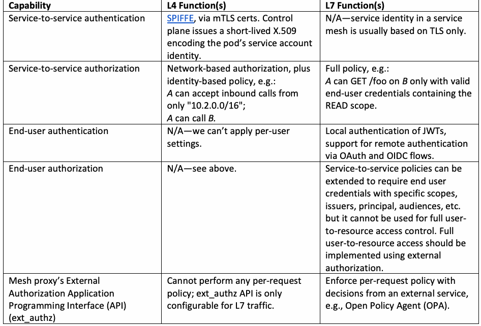
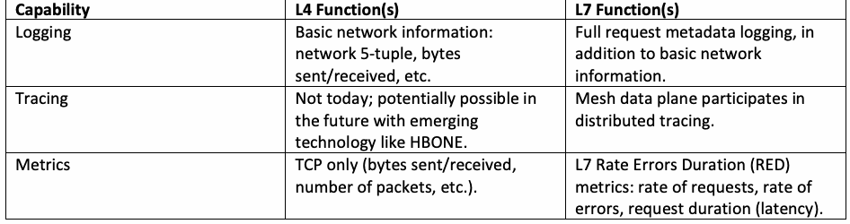
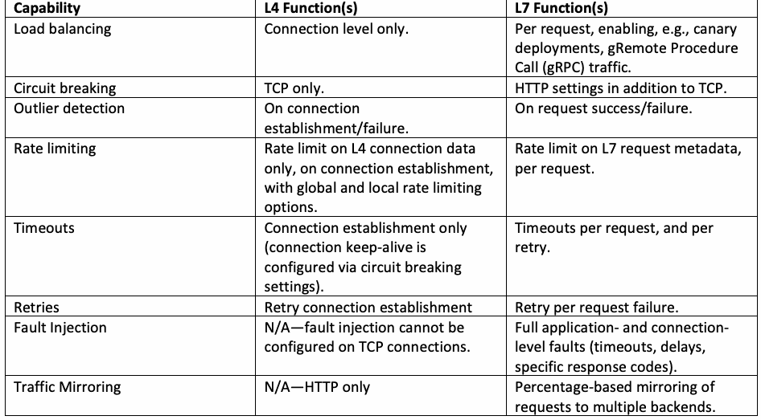

NIST SP 800-233 日本語訳
英語タイトル : Service Mesh Proxy Models for Cloud-Native Applications日本語タイトル : クラウドネイティブアプリケーション向けサービスメッシュプロキシモデル
公開日 : 2024-10-16
原文URL : https://csrc.nist.gov/pubs/sp/800/233/final
翻訳編集 : 自動生成
[要約] SP 800-233 は、サービスメッシュのデータプレーンを構成するプロキシのモデルごとに脅威プロファイルを示し、クラウドネイティブアプリケーションへの適用に関する推奨事項を提示します。データプレーンの機能とプロキシ機能を整理し、サイドカーモデル（DPA-1）をはじめとする4つのデータプレーンアーキテクチャについて、脅威シナリオと分析方法論を説明します。サービスメッシュはクラウドネイティブアプリケーションのデファクトのアプリケーションサービスインフラストラクチャとなっており、本書は異なるセキュリティリスクを持つアプリケーションでの適用可能性を扱います。
有志による非公式の日本語訳です。NIST および米国商務省が作成・承認・推奨したものではありません。要件の確認にはNIST の正式版 PDFを参照してください。
NIST Special Publication 800
NIST Special Publication 800
NIST SP 800-233
NIST SP 800-233
Service Mesh Proxy Models for Cloud-Native Applications
クラウドネイティブアプリケーション向けサービスメッシュプロキシモデル
Ramaswamy Chandramouli
Ramaswamy Chandramouli
Zack Butcher
James Callaghan
Zack Butcher
James Callaghan
This publication is available free of charge from: https://doi.org/10.6028/NIST.SP.800-233
本出版物は以下から無料で入手できる: https://doi.org/10.6028/NIST.SP.800-233
NIST Special Publication 800
NIST Special Publication 800
NIST SP 800-233
NIST SP 800-233
Service Mesh Proxy Models for Cloud-Native Applications
クラウドネイティブアプリケーション向けサービスメッシュプロキシモデル
Ramaswamy Chandramouli Computer Security Division Information Technology Laboratory
Ramaswamy Chandramouli コンピュータセキュリティ部門 情報技術研究所
Zack Butcher Tetrate, Inc.
Zack Butcher Tetrate, Inc.
James Callaghan control-plane.io, Inc.
James Callaghan control-plane.io, Inc.
This publication is available free of charge from: https://doi.org/10.6028/NIST.SP.800-233
本出版物は以下から無料で入手できる: https://doi.org/10.6028/NIST.SP.800-233
October 2024
2024年10月
［米国商務省の紋章。公的な標章のため、この非公式サイトには掲載していない。原本 PDF を参照。］
U.S. Department of Commerce Gina M. Raimondo, Secretary
米国商務省 Gina M. Raimondo 長官
National Institute of Standards and Technology
国立標準技術研究所
Laurie E. Locascio, NIST Director and Under Secretary of Commerce for Standards and Technology
Laurie E. Locascio、NIST長官兼商務次官（標準・技術担当）
Certain commercial equipment, instruments, software, or materials, commercial or non-commercial, are identified in this paper in order to specify the experimental procedure adequately. Such identification does not imply recommendation or endorsement of any product or service by NIST, nor does it imply that the materials or equipment identified are necessarily the best available for the purpose.
実験手順を適切に規定するため、本書では商用・非商用を問わず、特定の商用機器、計測器、ソフトウェアまたは材料を特定している。この特定は、NISTがいずれかの製品またはサービスを推奨・承認することを意味せず、特定された材料や機器が当該目的に最適な選択肢であることも意味しない。
There may be references in this publication to other publications currently under development by NIST in accordance with its assigned statutory responsibilities. The information in this publication, including concepts and methodologies, may be used by federal agencies even before the completion of such companion publications. Thus, until each publication is completed, current requirements, guidelines, and procedures, where they exist, remain operative. For planning and transition purposes, federal agencies may wish to closely follow the development of these new publications by NIST.
本書には、割り当てられた法定責務に従ってNISTが現在策定中の他の出版物への言及が含まれる場合がある。本書に記載された概念や方法論を含む情報は、関連出版物が完成する前であっても連邦機関が利用できる。したがって、各出版物が完成するまでは、現行の要件、ガイドラインおよび手順が存在する場合、それらは引き続き有効である。計画および移行のため、連邦機関はNISTによるこれらの新しい出版物の策定状況を注視するとよい。
Organizations are encouraged to review all draft publications during public comment periods and provide feedback to NIST. Many NIST cybersecurity publications, other than the ones noted above, are available at https://csrc.nist.gov/publications.
各組織は、パブリックコメント期間中にすべてのドラフト出版物をレビューし、NISTにフィードバックを提供することが推奨される。上記に記載されたもの以外の多くのNISTサイバーセキュリティ関連出版物は、https://csrc.nist.gov/publications で入手できる。
Authority This publication has been developed by NIST in accordance with its statutory responsibilities under the Federal Information Security Modernization Act (FISMA) of 2014, 44 U.S.C. § 3551 et seq., Public Law (P.L.) 113-283. NIST is responsible for developing information security standards and guidelines, including minimum requirements for federal information systems, but such standards and guidelines shall not apply to national security systems without the express approval of appropriate federal officials exercising policy authority over such systems. This guideline is consistent with the requirements of the Office of Management and Budget (OMB) Circular A-130.
法的根拠 本書は、2014年連邦情報セキュリティ近代化法（FISMA）、合衆国法典第44編第3551条以下、および公法113-283に基づく法定責務に従ってNISTが策定した。NISTは、連邦情報システムの最低要件を含む情報セキュリティ標準およびガイドラインを策定する責任を負う。ただし、これらの標準およびガイドラインは、当該システムに関する方針決定権を有する適切な連邦政府職員が明示的に承認しない限り、国家安全保障システムには適用されない。本ガイドラインは、行政管理予算局（OMB）通達A-130の要件に沿っている。
Nothing in this publication should be taken to contradict the standards and guidelines made mandatory and binding on federal agencies by the Secretary of Commerce under statutory authority. Nor should these guidelines be interpreted as altering or superseding the existing authorities of the Secretary of Commerce, Director of the OMB, or any other federal official. This publication may be used by nongovernmental organizations on a voluntary basis and is not subject to copyright in the United States. Attribution would, however, be appreciated by NIST.
本書のいかなる記述も、法定の権限に基づき商務長官によって連邦機関に対して義務付けられ、拘束力を持つ基準およびガイドラインと矛盾するものと解釈されるべきではない。また、これらのガイドラインは、商務長官、OMB長官、またはその他の連邦職員の既存の権限を変更または優先するものと解釈されるべきでもない。本書は非政府組織によって自発的に使用される場合があり、米国内において著作権の対象とはならない。ただし、NISTによるクレジット表記（帰属表示）は歓迎される。
NIST Technical Series Policies Copyright, Use, and Licensing Statements NIST Technical Series Publication Identifier Syntax
NISTテクニカルシリーズのポリシー 著作権、使用、およびライセンスに関する記述 NISTテクニカルシリーズ出版物識別子の構文
Publication History Approved by the NIST Editorial Review Board on 2024-10-11
出版履歴 2024-10-11にNIST編集審査委員会により承認
How to Cite this NIST Technical Series Publication: Chandramouli R, Butcher Z, Callaghan J (2024) Service Mesh Proxy Models for Cloud-Native Applications. (National Institute of Standards and Technology, Gaithersburg, MD), NIST Special Publication (SP) NIST SP 800-233. https://doi.org/10.6028/NIST.SP.800-233
本NISTテクニカルシリーズ出版物の引用方法：Chandramouli R, Butcher Z, Callaghan J (2024) Service Mesh Proxy Models for Cloud-Native Applications（参考訳：クラウドネイティブアプリケーション向けサービスメッシュプロキシモデル）. (National Institute of Standards and Technology, Gaithersburg, MD), NIST Special Publication (SP) NIST SP 800-233. https://doi.org/10.6028/NIST.SP.800-233
Author ORCID iDs Ramaswamy Chandramouli: 0000-0002-7387-5858
著者ORCID iD Ramaswamy Chandramouli: 0000-0002-7387-5858
Contact Information sp800-233-comments@nist.gov
連絡先情報 sp800-233-comments@nist.gov
National Institute of Standards and Technology Attn: Computer Security Division, Information Technology Laboratory 100 Bureau Drive (Mail Stop 8930) Gaithersburg, MD 20899-8930
国立標準技術研究所 宛先：コンピュータセキュリティ部門、情報技術研究所 100 Bureau Drive (Mail Stop 8930) Gaithersburg, MD 20899-8930
Additional Information Additional information about this publication is available at https://csrc.nist.gov/pubs/sp/800/233/final, including related content, potential updates, and document history.
追加情報 本出版物に関する追加情報（関連コンテンツ、今後の更新の可能性、文書履歴を含む）は、https://csrc.nist.gov/pubs/sp/800/233/final で入手できる。
All comments are subject to release under the Freedom of Information Act (FOIA).
すべてのコメントは、情報公開法（FOIA）に基づく公開の対象となる。
Abstract
概要
The service mesh has become the de facto application services infrastructure for cloud-native applications. It enables the various runtime functions of an application through proxies that form the data plane of the service mesh. Depending on the distribution of the network layer functions and the granularity of association of the proxies to individual services and computing nodes, different proxy models or data plane architectures have emerged. This document describes a threat profile for each of the data plane architectures with a detailed threat analysis to make recommendations on their applicability for cloud-native applications with different security risk profiles.
サービスメッシュは、クラウドネイティブアプリケーションにおけるデファクトのアプリケーションサービスインフラストラクチャとなっている。サービスメッシュは、そのデータプレーンを構成するプロキシを介して、アプリケーションのさまざまなランタイム機能を実現する。ネットワーク層機能の分散や、個々のサービスおよびコンピュートノードに対するプロキシの関連付けの粒度に応じて、異なるプロキシモデルやデータプレーンアーキテクチャが登場している。本書では、各データプレーンアーキテクチャの脅威プロファイルを詳細な脅威分析とともに説明し、異なるセキュリティリスクプロファイルを持つクラウドネイティブアプリケーションに対するそれらの適用可能性についての推奨事項を提示する。
Keywords
キーワード
cloud-native application; data plane architecture; proxy model; service mesh; threat profile.
クラウドネイティブアプリケーション、データプレーンアーキテクチャ、プロキシモデル、サービスメッシュ、脅威プロファイル。
Reports on Computer Systems Technology
コンピュータシステム技術に関する報告
The Information Technology Laboratory (ITL) at the National Institute of Standards and Technology (NIST) promotes the U.S. economy and public welfare by providing technical leadership for the Nation’s measurement and standards infrastructure. ITL develops tests, test methods, reference data, proof of concept implementations, and technical analyses to advance the development and productive use of information technology. ITL’s responsibilities include the development of management, administrative, technical, and physical standards and guidelines for the cost-effective security and privacy of other than national security-related information in federal information systems. The Special Publication 800-series reports on ITL’s research, guidelines, and outreach efforts in information system security, and its collaborative activities with industry, government, and academic organizations.
米国国立標準技術研究所（NIST）の情報技術研究所（ITL）は、米国の測定および標準インフラストラクチャに対する技術的リーダーシップを提供することにより、米国経済と公共の福祉を促進している。ITLは、情報技術の開発と生産的な利用を前進させるために、テスト、テスト方法、参照データ、概念実証実装、および技術分析を開発している。ITLの責務には、連邦情報システムにおける国家安全保障関連以外の情報の費用対効果の高いセキュリティとプライバシーのためのマネジメント、管理、技術、および物理的標準とガイドラインの開発が含まれる。Special Publication 800シリーズは、情報システムセキュリティにおけるITLの研究、ガイドライン、アウトリーチ活動、ならびに産業界、政府、学術組織との連携活動について報告している。
Patent Disclosure Notice
特許開示に関する通知
NOTICE: ITL has requested that holders of patent claims whose use may be required for compliance with the guidance or requirements of this publication disclose such patent claims to ITL. However, holders of patents are not obligated to respond to ITL calls for patents and ITL has not undertaken a patent search in order to identify which, if any, patents may apply to this publication.
通知: ITLは、本出版物のガイダンスまたは要件への準拠に使用が必要となる可能性がある特許請求の範囲の保有者に対し、そのような特許請求の範囲をITLに開示することを要請した。ただし、特許保有者はITLからの特許開示要請に応じる義務はなく、ITLは本出版物に適用される可能性のある特許（存在する場合）を特定するための特許調査を実施していない。
As of the date of publication and following call(s) for the identification of patent claims whose use may be required for compliance with the guidance or requirements of this publication, no such patent claims have been identified to ITL.
出版日時点において、本出版物のガイダンスまたは要件への準拠に使用が必要となる可能性がある特許請求の範囲の特定を求めた後も、そのような特許請求の範囲はITLに対して特定されていない。
No representation is made or implied by ITL that licenses are not required to avoid patent infringement in the use of this publication.
本出版物の使用において特許侵害を回避するためにライセンスが不要である旨の表明は、ITLによって明示的または黙示的にもなされていない。
Table of Contents
目次
Executive Summary — 1
エグゼクティブサマリー — 1
1. Introduction — 2
1. はじめに — 2
1.1. L4 and L7 Functions of Proxies — 3
1.1. プロキシのL4およびL7機能 — 3
1.2. Objective and Target Audience — 3
1.2. 目的と対象読者 — 3
1.3. Relationship to Other NIST Documents — 4
1.3. 他のNIST文書との関係 — 4
1.4. Document Structure — 4
1.4. 本書の構成 — 4
2. Typical Service Mesh Data Plane Capabilities and Associated Proxy Functions — 5
2. 典型的なサービスメッシュのデータプレーン機能と関連プロキシ機能 — 5
3. Proxy Models (Data Plane Architectures) in Service Mesh Implementations — 7
3. サービスメッシュ実装におけるプロキシモデル（データプレーンアーキテクチャ） — 7
3.1. L4 and L7 Proxy per Service Instance (DPA-1) — Sidecar Model — 7
3.1. サービスインスタンスごとのL4およびL7プロキシ（DPA-1）— サイドカーモデル — 7
3.2. Shared L4 – L7 per Service Model (DPA-2) — 8
3.2. サービス単位の共有L4–L7モデル（DPA-2） — 8
3.3. Shared L4 and L7 Model (DPA-3) — 9
3.3. 共有L4およびL7モデル（DPA-3） — 9
3.4. L4 and L7 as Part of the Application Model (DPA-4) — 10
3.4. アプリケーションモデルの一部としてのL4およびL7（DPA-4） — 10
4. Data Plane Architecture Threat Scenarios and Analysis Methodology — 12
4. データプレーンアーキテクチャの脅威シナリオと分析方法論 — 12
4.1. Threat Analysis Methodology — 13
4.1. 脅威分析方法論 — 13
5. Detailed Threat Analysis for Data Plane Architectures — 14
5. データプレーンアーキテクチャの詳細な脅威分析 — 14
5.1. Threat Analysis for L4 and L7 Proxy per Service Instance (DPA-1) — Sidecar Model — 14
5.1. サービスインスタンスごとのL4およびL7プロキシ（DPA-1）の脅威分析— サイドカーモデル — 14
5.1.1. Compromised L4 Proxy (TR-1) — 14
5.1.1. 侵害されたL4プロキシ（TR-1） — 14
5.1.2. Compromised Application Container (TR-2) — 14
5.1.2. 侵害されたアプリケーションコンテナ（TR-2）— 14
5.1.3. Compromise of Business Data (TR-3) — 15
5.1.3. ビジネスデータの侵害（TR-3）— 15
5.1.4. Compromised L7 Proxy (TR-4) — 15
5.1.4. 侵害されたL7プロキシ（TR-4）— 15
5.1.5. Compromise of Shared L7 Proxy (TR-5) — 15
5.1.5. 共有L7プロキシの侵害（TR-5）— 15
5.1.6. Outdated Client Libraries in Applications (TR-6) — 16
5.1.6. アプリケーション内の古いクライアントライブラリ（TR-6）— 16
5.1.7. Denial of Service (TR-7) — 16
5.1.7. サービス拒否（TR-7）— 16
5.1.8. Resource Consumption (TR-8) — 17
5.1.8. リソース消費（TR-8）— 17
5.1.9. Privileged L4 Proxy (TR-9) — 17
5.1.9. 特権L4プロキシ（TR-9）— 17
5.1.10. Data Plane (Service Mesh) Bypassed (TR-10) — 17
5.1.10. データプレーン（サービスメッシュ）のバイパス（TR-10） — 17
5.1.11 Overall Threat Score — 18
5.1.11 総合脅威スコア — 18
5.2. Threat Analysis for Shared L4 – L7 per Service Model (DPA-2) — 18
5.2. サービス単位の共有L4–L7モデル（DPA-2）の脅威分析 — 18
5.2.1. Compromised L4 Proxy (TR-1) — 18
5.2.1. 侵害されたL4プロキシ（TR-1） — 18
5.2.2. Compromised Application Container (TR-2) — 18
5.2.2. 侵害されたアプリケーションコンテナ（TR-2） — 18
5.2.3. Compromise of Business Data (TR-3) — 18
5.2.3. ビジネスデータの侵害（TR-3） — 18
5.2.4. Compromised L7 Proxy (TR-4) — 19
5.2.4. 侵害されたL7プロキシ（TR-4） — 19
5.2.5. Compromise of Shared L7 Proxy (TR-5) — 19
5.2.5. 共有L7プロキシの侵害（TR-5） — 19
5.2.6. Outdated Client Libraries in Applications (TR-6) — 19
5.2.6. アプリケーション内の古いクライアントライブラリ（TR-6） — 19
5.2.7. Denial of Service (TR-7) — 19
5.2.7. サービス拒否（TR-7） — 19
5.2.8. Resource Consumption (TR-8) — 20
5.2.8. リソース消費（TR-8） — 20
5.2.9 Privileged L4 Proxy (TR-9) — 20
5.2.9 特権L4プロキシ（TR-9） — 20
5.2.10 Data Plane (Service Mesh) Bypassed (TR-10) — 21
5.2.10 データプレーン（サービスメッシュ）のバイパス（TR-10） — 21
5.2.11 Overall Threat Score — 21
5.2.11 総合脅威スコア — 21
5.3. Threat Analysis for Shared L4 and L7 Model (DPA-3) — 21
5.3. 共有L4およびL7モデル（DPA-3）の脅威分析 — 21
5.3.1. Compromised L4 Proxy (TR-1) — 21
5.3.1. 侵害されたL4プロキシ（TR-1） — 21
5.3.2. Compromised Application Container (TR-2) — 22
5.3.2. 侵害されたアプリケーションコンテナ（TR-2） — 22
5.3.3. Compromise of Business Data (TR-3) — 22
5.3.3. ビジネスデータの侵害（TR-3） — 22
5.3.4. Compromised L7 Proxy (TR-4) — 22
5.3.4. 侵害されたL7プロキシ（TR-4） — 22
5.3.5. Compromise of Shared L7 Proxy (TR-5) — 23
5.3.5. 共有L7プロキシの侵害（TR-5） — 23
5.3.6. Outdated Client Libraries in Applications (TR-6) — 23
5.3.6. アプリケーション内の古いクライアントライブラリ（TR-6） — 23
5.3.7. Denial of Service (TR-7) — 23
5.3.7. サービス拒否（TR-7） — 23
5.3.8. Resource Consumption (TR-8) — 23
5.3.8. リソース消費（TR-8） — 23
5.3.9. Privileged L4 Proxy (TR-9) — 24
5.3.9. 特権L4プロキシ（TR-9） — 24
5.3.10. Data Plane (Service Mesh) Bypassed (TR-10) — 24
5.3.10. データプレーン（サービスメッシュ）のバイパス（TR-10） — 24
5.3.11 Overall Threat Score — 24
5.3.11 総合脅威スコア — 24
5.4. Threat Analysis for L4 and L7 as Part of the Application Model (gRPC proxyless Model (DPA-4)) — 25
5.4. アプリケーションモデルの一部としてのL4およびL7（gRPCプロキシレスモデル）（DPA-4）の脅威分析 — 25
5.4.1. Compromised L4 Proxy (TR-1) — 25
5.4.1. 侵害されたL4プロキシ（TR-1） — 25
5.4.2. Compromised Application Container (TR-2) — 25
5.4.2. 侵害されたアプリケーションコンテナ（TR-2） — 25
5.4.3. Compromise of Business Data (TR-3) — 25
5.4.3. ビジネスデータの侵害（TR-3） — 25
5.4.4. Compromised L7 Proxy (TR-4) — 25
5.4.4. 侵害されたL7プロキシ（TR-4） — 25
5.4.5. Compromise of Shared L7 Proxy (TR-5) — 26
5.4.5. 共有L7プロキシの侵害（TR-5） — 26
5.4.6. Outdated Client Libraries in Applications (TR-6) — 26
5.4.6. アプリケーション内の古いクライアントライブラリ（TR-6） — 26
5.4.7. Denial of Service (TR-7) — 26
5.4.7. サービス拒否（TR-7） — 26
5.4.8. Resource Consumption (TR-8) — 27
5.4.8. リソース消費（TR-8） — 27
5.4.9 Privileged L4 Proxy (TR-9) — 27
5.4.9 特権L4プロキシ（TR-9） — 27
5.4.10 Data Plane (Service Mesh) Bypassed (TR-10) — 27
5.4.10 データプレーン（サービスメッシュ）のバイパス（TR-10） — 27
5.4.11 Overall Threat Score — 28
5.4.11 総合脅威スコア — 28
6. Recommendations Based on the Application Security Risk Profile — 29
6. アプリケーションセキュリティリスクプロファイルに基づく推奨事項 — 29
6.1. Cloud-Native Applications With Low Risk Profiles — 29
6.1. リスクプロファイルが低いクラウドネイティブアプリケーション — 29
6.2. Cloud-Native Applications with Medium Risk Profiles — 30
6.2. リスクプロファイルが中程度のクラウドネイティブアプリケーション — 30
6.3. Cloud-Native Applications With High Risk Profiles — 30
6.3. リスクプロファイルが高いクラウドネイティブアプリケーション — 30
7. Summary and Conclusions — 32
7. 要約と結論 — 32
References.......................................................................................................................................33
参考文献.......................................................................................................................................33
Acknowledgments
謝辞
The authors would like to express their thanks to Francesco Beltramini of control-plane.io for participating in discussions and providing his valuable perspective. The authors would also like to express their thanks to Isabel Van Wyk of NIST for her detailed editorial review, both for the public comment version as well as for the final publication
著者は、議論に参加し貴重な視点を提供してくださったcontrol-plane.ioのFrancesco Beltramini氏に謝意を表す。また、パブリックコメント版および最終出版物の両方において詳細な編集レビューを行ってくださったNISTのIsabel Van Wyk氏にも謝意を表す
Executive Summary
エグゼクティブサマリー
A centralized infrastructure called a service mesh can provide run-time services for cloud-native applications that consist of multiple loosely coupled components called microservices. These services include secure communication, service discovery, resiliency, and authorization of application communication. These services are mainly provided through proxies that form the data plane of the service mesh, which is the layer that handles application traffic at runtime and enforces policy.
サービスメッシュと呼ばれる集中管理型インフラストラクチャは、マイクロサービスと呼ばれる複数の疎結合コンポーネントから構成されるクラウドネイティブアプリケーションに対してランタイムサービスを提供できる。これらのサービスには、セキュアな通信、サービス検出、回復性（レジリエンス）、およびアプリケーション通信の認可が含まれる。これらのサービスは主として、サービスメッシュのデータプレーンを形成するプロキシを介して提供される。データプレーンとは、ランタイムにおいてアプリケーショントラフィックを処理し、ポリシーを適用するレイヤである。
The functions that the proxies provide can be broadly categorized into two groups based on the Open Systems Interconnection (OSI) model’s network layer to which those functions pertain: Layer 4 (“L4”) and Layer 7 (“L7”). In most service mesh deployments in production environments today, all proxy functions that provide services in both L4 and L7 layers are packed into a single proxy that is assigned to a single microservice. This service mesh proxy model is called a sidecar proxy model since the proxy is not only associated with a single service but is implemented to execute in the same network space as the service.
プロキシが提供する機能は、それらの機能が関係する開放型システム間相互接続（OSI）参照モデルのネットワークレイヤに基づいて、レイヤ4（「L4」）とレイヤ7（「L7」）の2つのグループに大別できる。今日の本番環境におけるサービスメッシュデプロイメントの大部分では、L4レイヤとL7レイヤの双方でサービスを提供するすべてのプロキシ機能が、単一のマイクロサービスに割り当てられた単一のプロキシにまとめられている。このサービスメッシュプロキシモデルは、プロキシが単一のサービスに関連付けられているだけでなく、そのサービスと同じネットワーク空間で実行されるように実装されていることから、サイドカープロキシモデルと呼ばれる。
However, performance and resource considerations have led to the exploration of alternate proxy models that involve splitting L4 and L7 functions into different proxies and the association or assignments of these proxies to either a single service or a group of services. This enables the proxies to be implemented at different locations at the granularity of a node rather than at the level of services. Though different models are theoretically possible, this document only considers service mesh proxy models in the data plane implementation of commonly used service mesh offerings at different stages.
しかしながら、パフォーマンスやリソースへの配慮から、L4機能とL7機能を異なるプロキシに分割し、これらのプロキシを単一のサービスまたはサービスのグループのいずれかに関連付けあるいは割り当てる代替プロキシモデルの検討が行われるようになった。これにより、サービスのレベルではなく、ノードの粒度で異なる場所にプロキシを実装することが可能になる。理論上はさまざまなモデルが可能であるが、本ドキュメントでは、様々な段階で一般的に使用されるサービスメッシュ製品のデータプレーン実装におけるサービスメッシュプロキシモデルのみを検討対象とする。
Various potential or likely threats to proxy functions may result in different types of exploits in different proxy models. This variation is due to several factors, such as the attack surface (i.e., communication patterns to which a particular proxy is exposed), the number of clients (services) served, and the OSI layer functions that they provide (e.g., L7 functions are more complicated and likely to have more vulnerabilities than L4 functions). The two main contributions of this document are the following:
プロキシ機能に対する潜在的または可能性の高い様々な脅威は、異なるプロキシモデルにおいて異なる種類のエクスプロイトをもたらす可能性がある。この差異は、アタックサーフェス（攻撃対象領域、すなわち特定のプロキシが晒される通信パターン）、提供対象となるクライアント（サービス）の数、およびそれらが提供するOSIレイヤの機能（例：L7機能はL4機能よりも複雑であり、より多くの脆弱性を抱える可能性が高い）など、いくつかの要因に起因する。本ドキュメントの2つの主な貢献は以下のとおりである。
1.The nature of the exploits that are possible for each threat in each of the proxy models is characterized by assigning scores to the impact and likelihood of each of the threats in each of the proxy models or architectural patterns, resulting in a threat profile that is associated with each architectural pattern or proxy model of service mesh.
1.各プロキシモデルにおける各脅威に対して可能なエクスプロイトの性質は、各プロキシモデルまたはアーキテクチャパターンにおける各脅威の影響度と発生可能性にスコアを割り当てることによって特徴付けられ、その結果、サービスメッシュの各アーキテクチャパターンまたはプロキシモデルに関連付けられた脅威プロファイルが得られる。
2.Each threat profile has an inherent set of security trade-offs at an architectural level. The implications of these trade-offs in meeting the requirements associated with the security risk profiles of different cloud-native applications are analyzed to make a broad set of recommendations toward specific architectural patterns that are appropriate for applications with different security risk profiles.
2.各脅威プロファイルには、アーキテクチャレベルでのセキュリティトレードオフの固有のセットが存在する。異なるセキュリティリスクプロファイルを持つアプリケーションに適した特定のアーキテクチャパターンに向けた広範な一連の推奨事項を策定するために、さまざまなクラウドネイティブアプリケーションのセキュリティリスクプロファイルに関連する要件を満たす上でのこれらのトレードオフの影響を分析する。
1. Introduction
1. はじめに
“Cloud-native” refers to an architectural philosophy for building scalable, resilient systems that are designed to leverage the advantages of cloud computing environments. Cloud-native applications can run both on-premises and in public cloud platforms and are normally built using agile development methodologies, such as continuous integration/continuous delivery (CI/CD). Typically, technologies such as containerization and virtual machines (VMs) are used, and resilience and fail-safe features will be built in.
「クラウドネイティブ」とは、クラウドコンピューティング環境の利点を活用するように設計された、スケーラブルで耐障害性のあるシステムを構築するためのアーキテクチャ哲学を指す。クラウドネイティブアプリケーションは、オンプレミスとパブリッククラウドプラットフォームの双方で稼働でき、通常、継続的インテグレーション／継続的デリバリー（CI/CD）などのアジャイル開発手法を用いて構築される。一般的に、コンテナ化や仮想マシン（VM）などの技術が使用され、耐障害性やフェイルセーフ機能が組み込まれる。
Microservices-based applications use an architectural approach in which the entire application is broken into loosely coupled components that can be independently updated and scaled. The implementation of microservices is enabled using containers that in turn require orchestration tools and often employ a centralized services infrastructure (e.g., service mesh) to provide all runtime application services, including network connectivity, security, resiliency, and monitoring capabilities. Microservices-based applications can be implemented and deployed as cloud-native, though they represent an independent architectural approach.
マイクロサービスベースのアプリケーションは、アプリケーション全体を独立して更新およびスケール可能な疎結合コンポーネントへと分割するアーキテクチャアプローチを採用している。マイクロサービスの実装はコンテナを使用することで可能になり、コンテナはオーケストレーションツールを必要とし、ネットワーク接続性、セキュリティ、耐障害性、監視機能を含むすべてのランタイムアプリケーションサービスを提供するために、一元化されたサービスインフラストラクチャ（例：サービスメッシュ）を採用することがよくある。マイクロサービスベースのアプリケーションは、独立したアーキテクチャアプローチを表しているものの、クラウドネイティブとして実装および配備することが可能である。
The infrastructure services or functions provided by a service mesh during application runtime are provided by entities called proxies, which constitute the data plane of the service mesh. In addition, the service mesh consists of another architectural component called the control plane, which supports the functions of the data plane through interfaces to define configurations, inject software programs, and provide security artifacts (e.g., certificates).
アプリケーションの実行時にサービスメッシュによって提供されるインフラストラクチャサービスまたは機能は、プロキシと呼ばれるエンティティによって提供され、これらがサービスメッシュのデータプレーンを構成する。さらに、サービスメッシュはコントロールプレーンと呼ばれる別のアーキテクチャコンポーネントで構成されており、設定の定義、ソフトウェアプログラムの挿入、セキュリティアーティファクト（例：証明書）の提供を行うためのインターフェースを通じてデータプレーンの機能をサポートする。
Various configurations for proxies are being developed and tested based on the performance and security assurance data obtained during the deployment of service mesh over the last several years. These configurations are proxy (implementation) models that are based on the OSI layer functions that they provide (described in the following paragraphs) and the granularity of association between a proxy and services. Since proxies are the predominant entities of the data plane of a service mesh, these various proxy models are also called data plane architectures.
過去数年間にわたるサービスメッシュの展開中に得られたパフォーマンスおよびセキュリティ保証データに基づいて、プロキシのさまざまな構成が開発およびテストされている。これらの構成は、提供するOSIレイヤ機能（以降の段落で説明）およびプロキシとサービス間の関連付けの粒度に基づくプロキシ（実装）モデルである。プロキシはサービスメッシュのデータプレーンの主要なエンティティであるため、これらのさまざまなプロキシモデルはデータプレーンアーキテクチャとも呼ばれる。
The OSI model [1] is a useful abstraction for thinking about the functions required to serve an application over the network. It describes seven “layers,” from the physical wires that connect two machines (i.e., Layer 1 – L1, the physical layer) to the application itself (i.e., Layer 7 – L7, the application layer).
OSIモデル [1] は、ネットワーク経由でアプリケーションを提供するために必要な機能を考える上で有用な抽象化である。これは、2台のマシンを接続する物理的なワイヤ（すなわち、レイヤ1 – L1、物理レイヤ）からアプリケーション自体（すなわち、レイヤ7 – L7、アプリケーションレイヤ）までの7つの「レイヤ」を記述している。
Layers 3, 4, and 7 are key to facilitating communication between cloud-native applications (e.g., two microservices making Hypertext Transfer Protocol (HTTP)/REST calls to each other):
レイヤ3、4、および7は、クラウドネイティブアプリケーション間の通信（例：互いにHypertext Transfer Protocol（HTTP）/REST呼び出しを行う2つのマイクロサービス）を円滑にするための鍵となる：
•Layer 3 (“L3”), the network layer, facilitates baseline connectivity between two workloads or service instances. In nearly all cases, the Internet Protocol (IP) is used as the L3 implementation.
•レイヤ3（「L3」）であるネットワークレイヤは、2つのワークロードまたはサービスインスタンス間の基本的な接続性を促進する。ほぼすべてのケースにおいて、L3の実装としてインターネットプロトコル（IP）が使用される。
•Layer 4 (“L4”), the transport layer, facilitates the reliable transmission of data between workloads on the network. It also includes capabilities like encryption. Transport Control Protocol (TCP) and User Datagram Protocol (UDP) are commonly used L4 implementations, where transport layer security (TLS) provides encryption.
•レイヤ4（「L4」）であるトランスポートレイヤは、ネットワーク上のワークロード間での信頼性の高いデータ伝送を促進する。これには暗号化のような機能も含まれる。Transport Control Protocol（TCP）およびUser Datagram Protocol（UDP）は一般的に使用されるL4の実装であり、transport layer security（TLS）が暗号化を提供する。
•Layer 7 (“L7”), the application layer, is where protocols like HTTP operate — in user applications themselves (e.g., HTTP web servers, Secure Shell (SSH) servers).
•レイヤ7（「L7」）であるアプリケーションレイヤは、HTTPのようなプロトコルが動作する場所であり、ユーザーアプリケーション自体の中（例：HTTP Webサーバー、Secure Shell（SSH）サーバー）に存在する。
With respect to the layers above, a service mesh’s proxies in cloud-native environments are:
上記のレイヤに関して、クラウドネイティブ環境におけるサービスメッシュのプロキシは以下のとおりである：
•Agnostic to L3 if the microservice instances can communicate at L3 and the proxy can communicate with the mesh’s control plane.
•マイクロサービスインスタンスがL3で通信可能であり、かつプロキシがメッシュのコントロールプレーンと通信できる場合、L3に対して非依存である。
•At Layer 4 (L4): Connection establishment, management, and resiliency (e.g., connection-level retries); TLS (encryption in transit); application identity, authentication, and authorization; access policy based on network 5-tuple (e.g., source IP address and port, destination IP address and port, and transport protocol).
•レイヤ4（L4）において：接続の確立、管理、および耐障害性（例：接続レベルのリトライ）；TLS（転送中の暗号化）；アプリケーションのアイデンティティ、認証、および認可；ネットワーク5タプル（例：送信元IPアドレスとポート、宛先IPアドレスとポート、トランスポートプロトコル）に基づくアクセスポリシー。
•At Layer 7 (L7): Service discovery, request-level resiliency (e.g., retries, circuit breakers, outlier detection); and application observability.
•レイヤ7（L7）において：サービスディスカバリ；リクエストレベルの耐障害性（例：リトライ、サーキットブレーカー、外れ値検出）；およびアプリケーションのオブザーバビリティ。
1.1. L4 and L7 Functions of Proxies
1.1. プロキシのL4およびL7機能
There are two key aspects of proxy models:
プロキシモデルには2つの重要な側面がある。
1.Proxy functions: The functions that a service mesh’s proxies provide can be broadly categorized into two groups based on the OSI model’s layer [1] to which those functions pertain: Layer 4 (“L4”) and Layer 7 (“L7”). The associated proxies are called L4 proxies and L7 proxies, respectively. The study of proxy functions requires an understanding of the OSI’s L4 and L7 layers from the network stack point of view and the specific network services provided by those layers.
1.プロキシ機能：サービスメッシュのプロキシが提供する機能は、それらの機能が関連するOSIモデルのレイヤ[1]に基づいて、大きく2つのグループに分類できる。レイヤ4（「L4」）とレイヤ7（「L7」）である。関連するプロキシは、それぞれL4プロキシおよびL7プロキシと呼ばれる。プロキシ機能の検討には、ネットワークスタックの観点からのOSIのL4およびL7レイヤ、ならびにそれらのレイヤによって提供される特定のネットワークサービスについての理解が必要である。
2.Granularity of association: A proxy can be associated with a single microservice instance, an entire service, or deployed to provide functions for a group of services. Depending on the nature of this association, a proxy may execute within the same network space as the service, at the same node where the group of services to which it caters run, or in an independent node dedicated to proxies where no application services run.
2.関連付けの粒度：プロキシは、単一のマイクロサービスインスタンスに関連付けられることもあれば、サービス全体に関連付けられることも、サービスのグループに対して機能を提供するように配備されることもある。この関連付けの性質に応じて、プロキシはサービスと同じネットワーク空間内で実行される場合もあれば、自らが対応するサービスグループが実行されるのと同じノードで実行される場合や、アプリケーションサービスが実行されないプロキシ専用の独立したノードで実行される場合もある。
1.2. Objective and Target Audience
1.2. 目的と対象読者
This document will give a brief overview of the four data plane architectures (proxy models) being pursued by a range of service mesh implementations today. It will also provide threat profiles for different proxy models with a detailed threat analysis that involves 10 types of common threats. These threat profiles will inform recommendations regarding their applicability (usage) for cloud-native applications with different security risk profiles.
本書では、今日のさまざまなサービスメッシュ実装によって追求されている4つのデータプレーンアーキテクチャ（プロキシモデル）の概要を簡単に説明する。また、10種類の一般的な脅威を含む詳細な脅威分析とともに、さまざまなプロキシモデルの脅威プロファイルを提供する。これらの脅威プロファイルは、異なるセキュリティリスクプロファイルを持つクラウドネイティブアプリケーションに対する適用性（使用法）に関する推奨事項の基礎となる。
The target audience for these recommendations includes:
これらの推奨事項の対象読者には、以下が含まれる：
•Infrastructure owners, platform/infrastructure engineers, and their team leaders who build and deploy secure runtime environments for applications by choosing the right architecture for their environment given the risk factors of the applications that they will be running and the resulting security risk profile.
•実行する予定のアプリケーションのリスク要因と、結果として生じるセキュリティリスクプロファイルを考慮して、自らの環境に適したアーキテクチャを選択することにより、アプリケーション用のセキュアなランタイム環境を構築および配備するインフラストラクチャ所有者、プラットフォーム／インフラストラクチャエンジニア、およびそのチームリーダー。
•Personnel in charge of infrastructure operations who need to be familiar with the various building blocks of the proxy models or data plane architectures (and their associated functions and interactions) to troubleshoot in the event of performance (i.e., availability) and security issues
•パフォーマンス（すなわち可用性）およびセキュリティの問題が発生した際にトラブルシューティングを行うため、プロキシモデルまたはデータプレーンアーキテクチャのさまざまな構成要素（およびそれらに関連する機能と相互作用）に精通している必要があるインフラストラクチャ運用担当者
1.3. Relationship to Other NIST Documents
1.3. 他のNIST文書との関係
This document can be used as an adjunct to the NIST Special Publication (SP) 800-204 series of publications [2][3][4][5], which offer guidance on providing security assurance for cloud-native applications integrated with a service mesh from the following perspectives: strategy, configuration, and development/deployment paradigm. However, this document focuses on the various configurations of the application service infrastructure elements (i.e., proxies) and the resulting architectures (i.e., data plane architecture of the service mesh) that have different security implications for the application that is hosted under each of these configurations.
本書は、戦略、構成、および開発／配備パラダイムという観点から、サービスメッシュと統合されたクラウドネイティブアプリケーションのセキュリティ保証の提供に関するガイダンスを提供するNIST Special Publication (SP) 800-204シリーズの出版物 [2][3][4][5] の補足として使用できる。ただし、本書は、アプリケーションサービスインフラストラクチャ要素（すなわちプロキシ）のさまざまな構成と、これら各構成の下でホストされるアプリケーションに対して異なるセキュリティ上の影響を与える、結果として生じるアーキテクチャ（すなわちサービスメッシュのデータプレーンアーキテクチャ）に焦点を当てている。
1.4. Document Structure
1.4. 本書の構成
This document is organized as follows:
本書は以下のように構成されている：
•Section 2 lists the typical capabilities of the data plane of the service mesh under three headings (i.e., security, observability, and traffic management) and the corresponding L4 and L7 proxy functions implemented under those capabilities.
•第2章では、サービスメッシュのデータプレーンの代表的な機能を3つの見出し（すなわち、セキュリティ、オブザーバビリティ、トラフィック管理）の下でリストアップし、それらの機能の下で実装される対応するL4およびL7プロキシ機能を示す。
•Section 3 provides a brief overview of the four proxy models or data plane architectures.
•第3章では、4つのプロキシモデルまたはデータプレーンアーキテクチャの概要を簡単に説明する。
•Section 4 discusses proxy model threat scenarios and the threat analysis methodology adopted in this document for evaluating the threat profile score for the four data plane architectures.
•第4章では、プロキシモデルの脅威シナリオと、4つのデータプレーンアーキテクチャの脅威プロファイルスコアを評価するために本書で採用された脅威分析手法について説明する。
•Section 5 provides a detailed threat analysis for the four data plane architectures by assigning scores to the impact and likelihood factors associated with each threat and using them to arrive at an overall threat score.
•第5章では、各脅威に関連する影響度および可能性の要因にスコアを割り当て、それらを用いて総合脅威スコアを算出することにより、4つのデータプレーンアーキテクチャの詳細な脅威分析を提供する。
•Section 6 provides recommendations on the applicability (usage) of each of the four data plane architectures for cloud-native applications of different security risk profiles based on their security requirements.
•第6章では、セキュリティ要件に基づいて、異なるセキュリティリスクプロファイルを持つクラウドネイティブアプリケーションに対する4つのデータプレーンアーキテクチャそれぞれの適用性（使用法）に関する推奨事項を提供する。
•Section 7 provides the summary and conclusions.
•第7章では、要約と結論を提供する。
2. Typical Service Mesh Data Plane Capabilities and Associated Proxy Functions
2. 一般的なサービスメッシュのデータプレーン機能と関連するプロキシ機能
This document’s methodology examines the security trade-offs of the proxy models (i.e., data plane architectures) and the implementations of the various capabilities that result as L4 and L7 functions in proxies. Determining the totality of proxy functions requires an analysis of each capability, the category it falls under, and the granularity of the function that it provides at L4 and L7 levels.
本書の分析手法では、プロキシモデル（すなわちデータプレーンアーキテクチャ）のセキュリティ上のトレードオフと、プロキシにおけるL4およびL7機能として得られる各種機能の実装を検証する。プロキシ機能の全体像を把握するには、各機能、それが分類されるカテゴリ、ならびにL4およびL7レベルで提供される機能の粒度についての分析が必要となる。
Table 1 - Security Capabilities [15]
表1 - セキュリティ機能 [15]
| Capability | L4 Function(s) | L7 Function(s) |
| Service-to-service authentication | SPIFFE, via mTLS certs. Control plane issues a short-lived X.509 encoding the pod’s service account identity. | N/A—service identity in a service mesh is usually based on TLS only. |
| Service-to-service authorization | Network-based authorization, plus identity-based policy, e.g.: A can accept inbound calls from only "10.2.0.0/16"; A can call B. | Full policy, e.g.: A can GET /foo on B only with valid end-user credentials containing the READ scope. |
| End-user authentication | N/A—we can’t apply per-user settings. | Local authentication of JWTs, support for remote authentication via OAuth and OIDC flows. |
| End-user authorization | N/A—see above. | Service-to-service policies can be extended to require end user credentials with specific scopes, issuers, principal, audiences, etc. but it cannot be used for full user- to-resource access control. Full user-to-resource access should be implemented using external authorization. |
| Mesh proxy’s External Authorization Application Programming Interface (API) (ext_authz) | Cannot perform any per-request policy; ext_authz API is only configurable for L7 traffic. | Enforce per-request policy with decisions from an external service, e.g., Open Policy Agent (OPA). |
原本PDFの抜粋画像

| 機能 | L4機能 | L7機能 |
| サービス間認証 | mTLS証明書を介したSPIFFE。コントロールプレーンがPodのサービスアカウントIDをエンコードした有効期間の短いX.509証明書を発行する。 | 該当なし（N/A）— サービスメッシュにおけるサービスIDは通常、TLSのみに基づいている。 |
| サービス間認可 | ネットワークベースの認可、およびIDベースのポリシー（例: Aは"10.2.0.0/16"からのみのインバウンド呼び出しを受け入れ可能、AはBを呼び出し可能）。 | 完全なポリシー（例: Aは、READスコープを含む有効なエンドユーザー認証情報がある場合にのみBでGET /fooを実行可能）。 |
| エンドユーザー認証 | 該当なし（N/A）— ユーザーごとの設定を適用できない。 | JWTのローカル認証、OAuthおよびOIDCフローによるリモート認証のサポート。 |
| エンドユーザー認可 | 該当なし（N/A）— 上記を参照。 | サービス間ポリシーを拡張して、特定のスコープ、発行者、プリンシパル、オーディエンスなどを持つエンドユーザー認証情報を要求することはできるが、完全なユーザー対リソースのアクセス制御には使用できない。完全なユーザー対リソースのアクセス制御は、外部認可を使用して実装すべきである。 |
| メッシュプロキシの外部認可アプリケーションプログラミングインターフェース（API）（ext_authz） | リクエストごとのポリシーは一切実行できない。ext_authz APIはL7トラフィックに対してのみ設定可能である。 | 外部サービス（例: Open Policy Agent (OPA)）からの判断に基づいて、リクエストごとのポリシーを適用する。 |
Table 2 - Observability Capabilities [15]
表2 - オブザーバビリティ機能 [15]
| Capability | L4 Function(s) | L7 Function(s) |
| Logging | Basic network information: network 5-tuple, bytes sent/received, etc. | Full request metadata logging, in addition to basic network information. |
| Tracing | Not today; potentially possible in the future with emerging technology like HBONE. | Mesh data plane participates in distributed tracing. |
| Metrics | TCP only (bytes sent/received, number of packets, etc.). | L7 Rate Errors Duration (RED) metrics: rate of requests, rate of errors, request duration (latency). |
原本PDFの抜粋画像

| 機能 | L4機能 | L7機能 |
| ロギング | 基本的なネットワーク情報: ネットワーク5タプル、送信/受信バイト数など。 | 基本的なネットワーク情報に加えて、完全なリクエストメタデータのロギング。 |
| トレーシング | 現状は不可。将来的にはHBONEのような新興技術によって実現する可能性がある。 | メッシュデータプレーンが分散トレーシングに参加する。 |
| メトリクス | TCPのみ（送信/受信バイト数、パケット数など）。 | L7 Rate Errors Duration（RED）メトリクス: リクエストレート、エラーレート、リクエスト所要時間（レイテンシ）。 |
Table 3 – Traffic Management Capabilities [15]
表3 – トラフィック管理機能 [15]
| Capability | L4 Function(s) | L7 Function(s) |
| Load balancing | Connection level only. | Per request, enabling, e.g., canary deployments, gRemote Procedure Call (gRPC) traffic. |
| Circuit breaking | TCP only. | HTTP settings in addition to TCP. |
| Outlier detection | On connection establishment/failure. | On request success/failure. |
| Rate limiting | Rate limit on L4 connection data only, on connection establishment, with global and local rate limiting options. | Rate limit on L7 request metadata, per request. |
| Timeouts | Connection establishment only (connection keep-alive is configured via circuit breaking settings). | Timeouts per request, and per retry. |
| Retries | Retry connection establishment | Retry per request failure. |
| Fault Injection | N/A—fault injection cannot be configured on TCP connections. | Full application- and connection- level faults (timeouts, delays, specific response codes). |
| Traffic Mirroring | N/A—HTTP only | Percentage-based mirroring of requests to multiple backends. |
原本PDFの抜粋画像

| 機能 | L4機能 | L7機能 |
| 負荷分散 | 接続レベルのみ。 | リクエストごとであり、例えばカナリアデプロイメントやgRPCトラフィックを実現する。 |
| サーキットブレーキング | TCPのみ。 | TCPに加えてHTTP設定。 |
| 外れ値検出 | 接続確立時/失敗時。 | リクエスト成功時/失敗時。 |
| レート制限 | 接続確立時のL4接続データのみに対するレート制限であり、グローバルおよびローカルのレート制限オプションを備える。 | L7リクエストメタデータに対する、リクエストごとのレート制限。 |
| タイムアウト | 接続確立時のみ（接続のキープアライブはサーキットブレーキング設定を介して設定される）。 | リクエストごと、および再試行ごとのタイムアウト。 |
| 再試行 | 接続確立の再試行 | リクエスト失敗ごとの再試行。 |
| フォールトインジェクション（障害注入） | 該当なし（N/A）— フォールトインジェクションはTCP接続には設定できない。 | 完全なアプリケーションレベルおよび接続レベルの障害（タイムアウト、遅延、特定のレスポンスコード）。 |
| トラフィックミラーリング | 該当なし（N/A）— HTTPのみ | 複数のバックエンドへのリクエストの割合ベースのミラーリング。 |
L7 functions that are carried out by proxies are much more complex than L4 functions as the latter are carried out in lower layers of the OSI stack and involve protocols such as IP and TCP. For example, parsing a TCP stream for L4 functionality simply requires decoding a fixed set of bytes as integers (i.e., the packet header), while handling HTTP requests for L7 functionality requires decoding HTTP headers, including complex string parsing and compression with variable amounts of data. Additionally, the data dealt with in an L7 function are user-supplied (i.e., can be controlled by an attacker), while the TCP data at L4 are typically system-supplied as part of routing a request to the infrastructure. This means that there is less room to embed malicious data without breaking the system itself. In one case study, the proxy Envoy is used as the data plane by several service mesh implementations. Historically, majority of Envoy vulnerabilities have been in L7 function-related code compared to L4 function-related code.
プロキシによって実行されるL7機能は、L4機能よりもはるかに複雑である。後者はOSIスタックの下位層で実行され、IPやTCPなどのプロトコルが関与するためである。例えば、L4機能のためにTCPストリームを解析するには、単に固定されたバイトセットを整数（すなわちパケットヘッダー）としてデコードするだけで済むが、L7機能のためにHTTPリクエストを処理するには、可変量のデータを含む複雑な文字列解析や圧縮を含むHTTPヘッダーのデコードが必要となる。さらに、L7機能で扱われるデータはユーザーから提供される（すなわち攻撃者によって制御され得る）のに対し、L4のTCPデータは通常、インフラストラクチャへリクエストをルーティングする一環としてシステムから提供される。これは、システム自体を破壊することなく悪意のあるデータを埋め込む余地が少ないことを意味する。ある事例研究では、プロキシであるEnvoyが複数のサービスメッシュ実装によってデータプレーンとして使用されている。歴史的に、Envoyの脆弱性の大部分は、L4機能関連のコードと比較してL7機能関連のコードに存在していた。
3. Proxy Models (Data Plane Architectures) in Service Mesh Implementations
3. サービスメッシュ実装におけるプロキシモデル（データプレーンアーキテクチャ）
Different data plane architectures or proxy models in the service mesh are consequences of the following parameters:
サービスメッシュにおける異なるデータプレーンアーキテクチャやプロキシモデルは、以下のパラメータの結果として生じる：
•Delineation of L4 and L7 functions
•L4機能とL7機能の境界区分
•Nature of association of a proxy to service instances (1:1 or 1:N)
•サービスインスタンスに対するプロキシの関連付けの性質（1:1または1:N）
This section provides an overview of the building blocks of different data plane architectures to facilitate the threat analysis in Sec. 5. Iterations of the different architectures were driven by the adoption of mesh across a variety of use cases, necessitating trade-offs in terms of performance, reliability, and security for organizations with different application risk profiles. In spite of these different operating scenarios, the sidecar model has been the primary method for delivering service mesh capabilities.
本章では、第5章における脅威分析を容易にするために、さまざまなデータプレーンアーキテクチャの構成要素の概要を説明する。さまざまなアーキテクチャの反復は、多様なユースケースにわたるメッシュの採用によって推進され、異なるアプリケーションリスクプロファイルを持つ組織に対して、パフォーマンス、信頼性、セキュリティの面でのトレードオフを必要とした。これらの異なる運用シナリオにもかかわらず、サイドカーモデルはサービスメッシュ機能を提供するための主要な手法であり続けている。
The various alternate data plane architectures, including the one with widespread deployment at present, are:
現在広く導入されているものを含む、さまざまな代替データプレーンアーキテクチャは以下のとおりである。
•L4 and L7 per Service Instance (DPA-1) — Sidecar model
•サービスインスタンスごとのL4およびL7（DPA-1） — サイドカーモデル
•Shared L4 – L7 per Service (DPA-2) — A shared L4 proxy per node (i.e., shared among all applications that execute on the same physical host) with L7 proxies dedicated per service account or namespace.
•サービスごとに共有L4 – L7（DPA-2）— ノードごとに共有されるL4プロキシ（すなわち、同一の物理ホスト上で実行されるすべてのアプリケーション間で共有）と、サービスアカウントまたは名前空間ごとに専用のL7プロキシ。
•Shared L4 and L7 Model (DPA-3) — A shared L4 and L7 proxy per node (i.e., shared among all applications on the same physical host)
•共有L4およびL7モデル（DPA-3）— ノードごとに共有されるL4およびL7プロキシ（すなわち、同一の物理ホスト上のすべてのアプリケーション間で共有）
•L4 and L7 as Part of the Application (gRPC proxy-less model [14]) (DPA-4) — Both L4 and L7 functions are part of the application server itself (e.g., gRPC, Java Spring [16]) rather than implemented in stand-alone proxies.
•アプリケーションの一部としてのL4およびL7（gRPCプロキシレスモデル[14]）（DPA-4）— スタンドアロンのプロキシで実装されるのではなく、L4機能とL7機能の両方がアプリケーションサーバー自体（例：gRPC、Java Spring [16]）の一部となっている。
Though the last architectural pattern does not have distinct entities (e.g., proxies), all of the service mesh capabilities delivered by proxies are enabled by these frameworks.
この最後のアーキテクチャパターンには個別のエンティティ（例：プロキシ）が存在しないものの、プロキシによって提供されるサービスメッシュ機能のすべてが、これらのフレームワークによって実現される。
3.1. L4 and L7 Proxy per Service Instance (DPA-1) — Sidecar Model
3.1. サービスインスタンスごとのL4およびL7プロキシ（DPA-1）— サイドカーモデル
The most common service mesh data plane architecture is called the “sidecar model” because the proxy sits beside every instance of every service. The model dedicates a proxy that has the capability to implement both L4 and L7 functions for each application (service) instance. In its security model, the proxy holds one identity for the service it is deployed beside and resides in the same trust domain as the application (e.g., in Kubernetes, it exists in the same pod; on a virtual machine (VM), it is deployed in the same VM as the service itself). The service and the proxy communicate with each other through the “local host interface” rather than through a network socket. However, the proxy presents a larger attack surface than the service because it implements complex L7 functions. An example of a data plane architecture is one that is implemented in the Istio service mesh with an envoy proxy deployed per pod that performs both L4 and L7 functions.
最も一般的なサービスメッシュのデータプレーンアーキテクチャは、プロキシがすべてのサービスの各インスタンスの隣に配置されることから「サイドカーモデル」と呼ばれている。このモデルでは、各アプリケーション（サービス）インスタンスに対して、L4機能とL7機能の両方を実装する機能を持つプロキシが専用で割り当てられる。そのセキュリティモデルにおいて、プロキシは自身が並んでデプロイされているサービスに対する1つのIDを保持し、アプリケーションと同一の信頼ドメイン内に常駐する（例：Kubernetesでは同一のpod内に存在し、仮想マシン（VM）上ではサービス自体と同一のVM内にデプロイされる）。サービスとプロキシは、ネットワークソケットを介してではなく、「ローカルホストインターフェース」を介して相互に通信する。しかしながら、プロキシは複雑なL7機能を実装しているため、サービスよりも大きな攻撃対象領域（アタックサーフェス）を提示する。データプレーンアーキテクチャの例としては、Istioサービスメッシュにおいて実装されている、L4機能とL7機能の両方を実行するEnvoyプロキシがpodごとにデプロイされる構成が挙げられる。
A schematic diagram of this architecture is shown in Fig. 1.
このアーキテクチャの概略図を図1に示す。
![Fig. 1. Sidecar model —L4 and L7 Proxy per Service Instance (DPA-1). Two boxes labeled Node (VM) stand on either side of a band labeled Network. The left node holds two Pod (cgroups) boxes: one containing Application 1 Container above an L4 + L7 Proxy, the other containing Application 2 Container above an L4 + L7 Proxy. The right node holds one Pod (cgroups) containing Application 3 Container above an L4 + L7 Proxy. An arrow runs from Application 1 Container down to its proxy. From that proxy, one arrow crosses the Network to the proxy of Application 3, which points up to Application 3 Container, and a curved arrow leads to the proxy of Application 2, which points up to Application 2 Container.](assets/233/p0018-figure-01.png)
図1. サイドカーモデル — サービスインスタンスごとのL4およびL7プロキシ（DPA-1）。Network（ネットワーク）と記された帯の両側に、Node (VM)（ノード（VM））と記された 2 つの箱がある。左のノードには Pod (cgroups)（ポッド）の箱が 2 つあり、一方には Application 1 Container（アプリケーション 1 のコンテナ）とその下の L4 + L7 Proxy（プロキシ）、もう一方には Application 2 Container とその下の L4 + L7 Proxy が入っている。右のノードにはポッドが 1 つあり、Application 3 Container とその下の L4 + L7 Proxy が入っている。Application 1 Container から下のプロキシへ矢印が向かう。そのプロキシから、ネットワークを横切って Application 3 のプロキシへ矢印が向かい、そこから上の Application 3 Container へ矢印が向かう。また、同じプロキシから曲線の矢印が Application 2 のプロキシへ向かい、そこから上の Application 2 Container へ矢印が向かう。
Fig. 1. Sidecar model —L4 and L7 Proxy per Service Instance (DPA-1)
図1. サイドカーモデル — サービスインスタンスごとのL4およびL7プロキシ（DPA-1）
(The combined L4 and L7 proxy is deployed for each application instance and there is no sharing of any proxy).
（結合されたL4およびL7プロキシは各アプリケーションインスタンスに対して配備され、プロキシの共有は一切行われない）。
3.2. Shared L4 – L7 per Service Model (DPA-2)
3.2. 共有L4 – サービス単位L7モデル（DPA-2）
In Shared L4 – L7 per Service architecture, there is a shared L4 proxy per node (i.e., shared among all service instances that execute on the same physical host) with L7 proxies dedicated per service account. A variation in this architecture is to dedicate an L7 proxy for an entire namespace. This is not desirable from a security viewpoint for the same reasons that shared service accounts for an entire namespace are not recommended [2]. Hence, it is not considered for threat analysis in this document. An example of the implementation of this data plane architecture is Istio’s “ambient mode”, where the per node L4 proxy is called a Ztunnel proxy, and the per service account L7 proxy is called a Waypoint proxy [6][7][10][11][13]. It is to be noted that not every service needs a L7 proxy but when a L7 proxy is installed, it is dedicated to a single service.
共有L4 – サービス単位L7アーキテクチャでは、ノードごとに共有L4プロキシが存在し（すなわち、同一の物理ホスト上で実行されるすべてのサービスインスタンス間で共有される）、サービスアカウントごとに専用のL7プロキシが存在する。このアーキテクチャのバリエーションとして、ネームスペース全体に対して1つのL7プロキシを専用化するものがある。これは、ネームスペース全体で共有されるサービスアカウントが推奨されないのと同じ理由から、セキュリティの観点において望ましくない[2]。したがって、本書の脅威分析では考慮されない。このデータプレーンアーキテクチャの実装例としてIstioの「ambientモード」があり、ノードごとのL4プロキシはZtunnelプロキシと呼ばれ、サービスアカウントごとのL7プロキシはWaypointプロキシと呼ばれる[6][7][10][11][13]。すべてのサービスがL7プロキシを必要とするわけではないが、L7プロキシがインストールされる場合は、単一のサービス専用となる点に留意されたい。
A schematic diagram of this architecture is shown in Fig. 2.
このアーキテクチャの模式図を図2に示す。
![Fig. 2. Shared L4 – L7 per Service Model (DPA-2). Two boxes labeled Node (VM) stand on either side of a band labeled Network. The left node holds three Pod (cgroups) boxes containing, from top to bottom, Application 1 Container, Application 2 Container and an L4 Proxy. The right node holds three Pod (cgroups) boxes containing, from top to bottom, Application 3 Container, an L7 Proxy tagged Application 3, and an L4 Proxy. A curved arrow runs from Application 1 Container to the left L4 Proxy, which points up to Application 2 Container and across the Network to the right L4 Proxy. The right L4 Proxy points up to the L7 Proxy, which points up to Application 3 Container.](assets/233/p0019-figure-01.png)
図2. サービス単位で共有されるL4 – L7モデル（DPA-2）。Network（ネットワーク）と記された帯の両側に、Node (VM)（ノード（VM））と記された 2 つの箱がある。左のノードには Pod (cgroups)（ポッド）の箱が 3 つあり、上から Application 1 Container（アプリケーション 1 のコンテナ）、Application 2 Container（アプリケーション 2 のコンテナ）、L4 Proxy（L4 プロキシ）が入っている。右のノードにもポッドが 3 つあり、上から Application 3 Container（アプリケーション 3 のコンテナ）、Application 3 という札の付いた L7 Proxy（L7 プロキシ）、L4 Proxy（L4 プロキシ）が入っている。Application 1 Container から左の L4 プロキシへ曲線の矢印が向かい、左の L4 プロキシからは上の Application 2 Container へ、またネットワークを横切って右の L4 Proxy へ矢印が向かう。右の L4 Proxy から上の L7 Proxy へ、L7 Proxy から上の Application 3 Container へ矢印が向かう。
Fig. 2. Shared L4 – L7 per Service Model (DPA-2)
図2. 共有L4 – サービス単位L7モデル（DPA-2）
(An L4 proxy is deployed on each node and shared by all applications on that node. A single L7 proxy instance is deployed on behalf of "Application 3").
（L4プロキシは各ノードに配備され、そのノード上のすべてのアプリケーションによって共有される。単一のL7プロキシインスタンスが「Application 3」の代理として配備される）。
3.3. Shared L4 and L7 Model (DPA-3)
3.3. 共有L4およびL7モデル（DPA-3）
In Shared L4 and L7 architecture, the L4 and L7 functions are implemented on a per node basis. There is a shared L7 proxy per node, i.e., shared among all service instances that execute on the same physical host and provides L7 functions for all services in that node. L4 functions can be implemented by the L7 data plane, like the sidecar model (DPA-1) but shared across all applications on the node rather than dedicated one-per-app-instance. However, in some instances, L4 functions (e.g., traffic routing) can be performed by in-kernel programs (e.g., Extended Berkeley Packet Filter (eBPF) programs [8]) instead of by a mesh proxy. An example of this data plane architecture is the Cilium service mesh, which deploys the Envoy proxy as an L7 proxy based on its CiliumEnvoyConfig specification [8][9][12].
共有L4およびL7アーキテクチャでは、L4機能とL7機能がノード単位で実装される。ノードごとに共有L7プロキシが存在し、すなわち同一の物理ホスト上で実行されるすべてのサービスインスタンス間で共有され、そのノード内のすべてのサービスにL7機能を提供する。L4機能はサイドカーモデル（DPA-1）と同様にL7データプレーンによって実装できるが、アプリインスタンスごとに1つ専用化されるのではなく、ノード上のすべてのアプリケーション間で共有される。ただし、一部の事例では、L4機能（例：トラフィックルーティング）はメッシュプロキシの代わりにカーネル内プログラム（例：拡張Berkeley Packet Filter（eBPF）プログラム[8]）によって実行できる。このデータプレーンアーキテクチャの一例はCiliumサービスメッシュであり、これはCiliumEnvoyConfig仕様に基づいてEnvoyプロキシをL7プロキシとして配備する[8][9][12]。
A schematic diagram of this architecture is shown in Fig. 3.
このアーキテクチャの概略図を図3に示す。
![Fig. 3. Shared L4 – L7 Model (DPA-3). Two boxes labeled Node (VM) stand on either side of a band labeled Network. The left node holds three Pod (cgroups) boxes containing, from top to bottom, Application 1 Container, Application 2 Container and an L4 + L7 Proxy. The right node holds two Pod (cgroups) boxes containing Application 3 Container at the top and an L4 + L7 Proxy at the bottom. A curved arrow runs from Application 1 Container to the left L4 + L7 Proxy, which points up to Application 2 Container and across the Network to the right L4 + L7 Proxy. The right proxy points up to Application 3 Container.](assets/233/p0020-figure-01.png)
図3. 共有L4–L7モデル（DPA-3）。Network（ネットワーク）と記された帯の両側に、Node (VM)（ノード（VM））と記された 2 つの箱がある。左のノードには Pod (cgroups)（ポッド）の箱が 3 つあり、上から Application 1 Container（アプリケーション 1 のコンテナ）、Application 2 Container、L4 + L7 Proxy（プロキシ）が入っている。右のノードにはポッドが 2 つあり、上に Application 3 Container、下に L4 + L7 Proxy が入っている。Application 1 Container から左の L4 + L7 プロキシへ曲線の矢印が向かい、左のプロキシからは上の Application 2 Container へ、またネットワークを横切って右の L4 + L7 プロキシへ矢印が向かう。右のプロキシから上の Application 3 Container へ矢印が向かう。
Fig. 3. Shared L4 – L7 Model (DPA-3)
図3. 共有L4–L7モデル（DPA-3）
3.4. L4 and L7 as Part of the Application Model (DPA-4)
3.4. アプリケーションの一部としてのL4およびL7モデル（DPA-4）
L4 and L7 Part of the Application Model is a data plane architecture that does not have any pre-installed proxies. Instead, the service mesh control plane dynamically configures access to proxy functions using a set of discovery APIs collectively known as xDS APIs. The gRPC client and server libraries for applications provides extensive support for the xDS APIs. Leveraging this feature, the service mesh control plane can program L4 and L7 functions into this library in the service container. These gRPC libraries can then provide L4 and L7 functionality (in general, all policy enforcements) to the workloads or service instances with which they are integrated, thus replicating the exact services that the L4 and L7 proxies provide to those workloads [14].
アプリケーションの一部としてのL4およびL7モデルは、事前にインストールされたプロキシを持たないデータプレーンアーキテクチャである。代わりに、サービスメッシュのコントロールプレーンは、総称してxDS APIとして知られる一連のディスカバリーAPIを使用して、プロキシ機能へのアクセスを動的に構成する。アプリケーション向けのgRPCクライアントおよびサーバーライブラリは、xDS APIに対する広範なサポートを提供する。この機能を活用することで、サービスメッシュのコントロールプレーンは、サービスコンテナ内のこのライブラリにL4およびL7機能をプログラムできる。その後、これらのgRPCライブラリは、統合されているワークロードまたはサービスインスタンスに対してL4およびL7機能（一般的には、すべてのポリシー適用）を提供できるため、L4およびL7プロキシがそれらのワークロードに提供するのとまったく同じサービスを複製する [14]。
A schematic diagram of this architecture is shown in Fig. 4.
このアーキテクチャの概略図を図4に示す。
![Fig. 4. L4 and L7 as Part of the Application Model (gRPC proxyless Model) (DPA-4). Inside an outer frame, two boxes labeled Node (VM) stand on either side of a band labeled Network. The left node holds two Pod (cgroups) boxes, containing Application 1 Container and Application 2 Container; the right node holds one Pod (cgroups) containing Application 3 Container. Each container includes a gRPC Library. An arrow runs from the gRPC Library of Application 1 across the Network to the gRPC Library of Application 3, and a curved arrow runs from it to the gRPC Library of Application 2. There are no separate proxies.](assets/233/p0021-figure-01.png)
図4. アプリケーションの一部としてのL4およびL7モデル（gRPCプロキシレスモデル）（DPA-4）。外枠の中で、Network（ネットワーク）と記された帯の両側に Node (VM)（ノード（VM））と記された 2 つの箱がある。左のノードには Pod (cgroups)（ポッド）の箱が 2 つあり、Application 1 Container（アプリケーション 1 のコンテナ）と Application 2 Container が入っている。右のノードにはポッドが 1 つあり、Application 3 Container が入っている。各コンテナの中に gRPC Library（gRPC ライブラリ）がある。Application 1 の gRPC ライブラリから、ネットワークを横切って Application 3 の gRPC ライブラリへ矢印が向かい、また曲線の矢印が Application 2 の gRPC ライブラリへ向かう。独立したプロキシはない。
Fig. 4. L4 and L7 as Part of the Application Model (gRPC proxyless Model) (DPA-4)
図4. アプリケーションの一部としてのL4およびL7モデル（gRPCプロキシレスモデル）（DPA-4）
4. Data Plane Architecture Threat Scenarios and Analysis Methodology
4. データプレーンアーキテクチャの脅威シナリオおよび分析方法論
The threat scenario considers a service mesh deployed in a Kubernetes cluster with the assumption that no human can directly access the cluster, achieved via k8s role-based access control (RBAC). The only interaction with the cluster is via a continuous integration/continuous delivery (CI/CD) system-controlled declarative configuration in a version-controlled repository with a multi-step approval process to change that configuration, including the approval of each change by one other human at minimum.
この脅威シナリオでは、k8sのロールベースアクセス制御（RBAC）によって実現される、人間がクラスターに直接アクセスすることはできないという前提のもとで、Kubernetesクラスターにデプロイされたサービスメッシュを検討する。クラスターとの唯一の対話は、バージョン管理されたリポジトリ内の継続的インテグレーション／継続的デリバリー（CI/CD）システムによって制御される宣言型構成を介して行われ、その構成を変更するには、最低でも別の1人の人間による各変更の承認を含む、複数ステップの承認プロセスを経る。
This scenario starts by identifying access by external threat actors, internal threat actors, and malicious co-tenants.
このシナリオは、外部の脅威アクター、内部の脅威アクター、および悪意のあるコテナントによるアクセスの特定から始まる。
External threat actors include:
外部の脅威アクターには以下が含まれる：
•Compromised workload (application) container (e.g., via a supply chain attack)
•侵害されたワークロード（アプリケーション）コンテナ（例：サプライチェーン攻撃経由）
•Compromised node L4 proxy or container network interface (CNI)
•侵害されたノードのL4プロキシまたはコンテナネットワークインターフェース（CNI）
•Compromised node L7 proxy
•侵害されたノードのL7プロキシ
•Compromised node with limited privileged access (e.g., a container breakout)
•限定的な特権アクセスを持つ侵害されたノード（例：コンテナブレイクアウト）
•Root compromise of node (e.g., a container breakout chained with the exploitation of a privilege escalation vulnerability)
•ノードのroot侵害（例：特権昇格の脆弱性の悪用と連鎖したコンテナブレイクアウト）
•Network access to the Kubernetes API server
•Kubernetes APIサーバーへのネットワークアクセス
Internal threat actors include:
内部脅威アクターには以下が含まれる。
•Cluster administrators who have wide-ranging rights to view the cluster and approve changes to the version-controlled repository and may even have direct access to the Kubernetes cluster (e.g., via a break-glass debugging account; such super-accounts should generate detailed audit records of their usage)
•クラスターを閲覧し、バージョン管理されたリポジトリへの変更を承認する広範な権限を持ち、Kubernetesクラスターへの直接アクセス権すら持っている可能性があるクラスター管理者（例：非常用デバッグアカウント経由。このようなスーパーアカウントは、その使用に関する詳細な監査レコードを生成すべきである）
•Application developers who can build images and approve configurations that go into the cluster.
•イメージをビルドし、クラスターに投入される構成を承認できるアプリケーション開発者。
•Infrastructure engineers who have permission to deploy and configure the mesh gated by the version-controlled repository’s approval process.
•バージョン管理されたリポジトリの承認プロセスによって制御され、メッシュのデプロイおよび構成を行う権限を持つインフラストラクチャエンジニア。
•Compromised network infrastructure between nodes (e.g., unencrypted cross-data center communication)
•ノード間の侵害されたネットワークインフラストラクチャ（例：暗号化されていないデータセンター間通信）
Finally, malicious co-tenants - In general, k8s is not a hard multi-tenant system (i.e., one where tenants do not trust each other), and isolating tenants from each other with stronger boundaries is recommended. In this context, a malicious co-tenant would fall into one of the internal threat actor categories above. In this context, consider the following threats in an environment as they relate to the service mesh:
最後に、悪意のある共同テナント - 一般に、k8sは厳格なマルチテナントシステム（すなわち、テナント同士が互いを信頼しないシステム）ではなく、より強固な境界によってテナント同士を互いに分離することが推奨される。この文脈において、悪意のある共同テナントは上記の内部脅威アクターのカテゴリのいずれかに分類される。この文脈において、サービスメッシュに関連するものとして、環境における以下の脅威を検討する。
1.Compromised L4 proxy
1.侵害されたL4プロキシ
2.Compromise of the application container
2.アプリケーションコンテナの侵害
3.Compromise of business data
3.業務データの侵害
4.Compromised L7 proxy
4.侵害されたL7プロキシ
5.Compromised shared L7 Proxy
5.侵害された共有L7プロキシ
6.Outdated client libraries in applications
6.アプリケーション内の旧式のクライアントライブラリ
7.Denial of service (DoS)
7.サービス運用妨害（DoS）
8.Resource consumption
8.リソースの消費
9.Privileged L4 Proxy
9.特権L4プロキシ
10.Bypassing traffic interception
10.トラフィックインターセプトのバイパス
4.1. Threat Analysis Methodology
4.1. 脅威分析方法論
The threat analysis methodology begins by identifying 10 potential threats to the components that make up the four architectural patterns for the proxy model or data plane architecture. The methodology then describes how the functionality of each component of the architecture is adversely affected by each threat and rates the impact and likelihood of their occurrence, justifying each rating. There are three values for the ratings: low, medium, and high. The values assigned to these ratings are relative to other data plane architectures and are not absolute values based on a metric. For example, assigning a rating value of “high” to the likelihood parameter for a threat does not imply that the threat is highly likely in all situations. Rather, it means that the threat is most likely to be executed against that architecture relative to the other architectures under discussion.
脅威分析方法論は、まずプロキシモデルまたはデータプレーンアーキテクチャの4つのアーキテクチャパターンを構成するコンポーネントに対する10の潜在的脅威を特定することから始まる。次にこの方法論では、アーキテクチャの各コンポーネントの機能が各脅威によってどのように悪影響を受けるかを説明し、各評価の根拠を示した上で、その発生の影響度および可能性を評価する。評価の値には、低（low）、中（medium）、高（high）の3つがある。これらの評価に割り当てられる値は他のデータプレーンアーキテクチャとの相対的なものであり、指標に基づく絶対値ではない。例えば、ある脅威の発生可能性パラメータに「高（high）」という評価値を割り当てることは、その脅威があらゆる状況で発生する可能性が非常に高いことを意味するわけではない。そうではなく、検討対象となっている他のアーキテクチャと比較して、そのアーキテクチャに対して脅威が実行される可能性が最も高いことを意味する。
The impact (I) of the exploitation of each threat is then evaluated along with the likelihood (L) of that threat being exploited. For both parameters, there is a rating of low, medium, or high, which are translated to numeric scores of 1, 2, and 3, respectively. Multiplying I * L yields an indication of how important that threat is and the necessity to mitigate that threat relative to other architectures under discussion. Summing up the values of this indicator for all 10 potential threats provides an indication of the threat profile for that architectural pattern.
次に、各脅威の悪用による影響度（I）が、その脅威が悪用される可能性（L）とともに評価される。両方のパラメータについて低（low）、中（medium）、高（high）の評価があり、それぞれ数値スコアの1、2、3に換算される。I * Lを乗算することにより、検討対象となっている他のアーキテクチャと比較して、その脅威がどれほど重要であるか、およびその脅威を緩和する必要性の指標が得られる。10の潜在的脅威すべてについてこの指標の値を合計することで、そのアーキテクチャパターンの脅威プロファイルの指標が得られる。
Threats whose impact and likelihood are the same irrespective of the architecture (i.e., the threats are agnostic to the architecture) are assigned a relative score of 1 for impact and 1 for likelihood.
アーキテクチャに関係なく影響度と可能性が同じである脅威（すなわち、アーキテクチャに依存しない脅威）には、影響度に対して1、可能性に対して1の相対スコアが割り当てられる。
5. Detailed Threat Analysis for Data Plane Architectures
5. データプレーンアーキテクチャの詳細な脅威分析
This section considers potential targeted threats to L4 and L7 proxy functions or the libraries that implement the associated functions, the relevant proxy function that is impacted, the degree of impact, and the likelihood of the threat occurring for each of the data plane architectures (see Sec. 3.1 to 3.4).
本節では、L4およびL7プロキシ機能または関連機能を実装するライブラリに対する潜在的な標的型脅威、影響を受ける該当プロキシ機能、影響の程度、ならびに各データプレーンアーキテクチャ（3.1項から3.4項を参照）において脅威が発生する可能性について検討する。
5.1. Threat Analysis for L4 and L7 Proxy per Service Instance (DPA-1) — Sidecar Model
5.1. サービスインスタンスごとのL4およびL7プロキシ（DPA-1）の脅威分析 — サイドカーモデル
The threats to the data plane of the service mesh are denoted using the mnemonic TR-x, where TR stands for threat, and x stands for the threat sequence number.
サービスメッシュのデータプレーンに対する脅威は、ニーモニックTR-xを使用して示される。ここで、TRは脅威（threat）を表し、xは脅威のシーケンス番号を表す。
5.1.1. Compromised L4 Proxy (TR-1)
5.1.1. 侵害されたL4プロキシ (TR-1)
Threat Description: A compromised L4 proxy (or L4 functions in the case of sidecar proxy with combined L4 and L7 functions) leads to leaked identities for every workload (service) running on the node.
脅威の説明: 侵害されたL4プロキシ（またはL4とL7の機能を兼ね備えたサイドカープロキシの場合におけるL4機能）は、ノード上で実行されているすべてのワークロード（サービス）のアイデンティティ漏洩につながる。
Proxy Function Impacted: Sidecar proxies negotiate mTLS connections (for communicating with any other service) on behalf of the single workload with which it is associated. In order to compromise key material and identity documents (i.e., threat targets) for multiple workloads, multiple proxy (sidecar) instances would need to be compromised.
影響を受けるプロキシ機能: サイドカープロキシは、自身が関連付けられている単一のワークロードに代わって、（他の任意のサービスと通信するための）mTLS接続をネゴシエートする。複数のワークロードの鍵マテリアルおよびアイデンティティ文書（すなわち脅威の標的）を侵害するためには、複数のプロキシ（サイドカー）インスタンスを侵害する必要がある。
Impact Score = 1: Because of the nature of impact discussed above (i.e., single workload/single identity affected), this threat is assigned an impact score of 1.
影響スコア = 1: 上述した影響の性質（すなわち、単一のワークロード/単一のアイデンティティが影響を受けること）により、この脅威には1の影響スコアが割り当てられる。
Likelihood Score = 2: Code relating to L7 functions is present to be exploited if it can be triggered. In a pure L4 proxying case, it should not be triggerable, but this relies on correct configuration from users and the service mesh implementation.
発生可能性スコア = 2: トリガー可能である場合に悪用される可能性のあるL7機能に関連するコードが存在する。純粋なL4プロキシ処理のケースではトリガー不可能であるはずだが、これはユーザーおよびサービスメッシュの実装による正しい構成に依存する。
5.1.2. Compromised Application Container (TR-2)
5.1.2. 侵害されたアプリケーションコンテナ (TR-2)
Threat Description: A compromised application container (e.g., via a supply chain attack during the development phase) leads to a takeover of the identity associated with that application.
脅威の説明: 侵害されたアプリケーションコンテナ（例: 開発フェーズにおけるサプライチェーン攻撃経由など）は、そのアプリケーションに関連付けられたアイデンティティの乗っ取りにつながる。
Proxy Function Impacted: Proxies run in the same network space (i.e., same pod in Kubernetes environment) as the application container, meaning that a compromise of the application container that hosts the service instance can easily lead to a compromise of any key material (e.g., full access to key material pertaining to the identity of the service) possessed by the proxy.
影響を受けるプロキシ機能: プロキシはアプリケーションコンテナと同じネットワーク空間（すなわちKubernetes環境における同一ポッド）で実行されるため、サービスインスタンスをホストするアプリケーションコンテナの侵害は、プロキシが保持する任意の鍵マテリアルの侵害（例: サービスのアイデンティティに関連する鍵マテリアルへの完全なアクセス）に容易につながる可能性がある。
Impact Score = 2: Because of the nature of impact discussed above (i.e., single workload/single identity affected), this threat is assigned an impact score of 2. Even though only a single identity is compromised, like TR-1, this has a higher impact score as the application itself must be updated. A compromised proxy can be remediated without requiring the application itself to be updated, so there is a higher chance that a central team can successfully remediate a compromise without involving application teams.
影響スコア = 2: 上記で論じた影響の性質（すなわち、単一のワークロード／単一のアイデンティティが影響を受けること）により、この脅威には影響スコア2が割り当てられている。TR-1と同様に、侵害されるアイデンティティは単一のみであるものの、アプリケーション自体を更新しなければならないため、これにはより高い影響スコアが割り当てられている。侵害されたプロキシはアプリケーション自体の更新を必要とせずに修復できるため、中央チームがアプリケーションチームを関与させることなく侵害を正常に修復できる可能性が高くなる。
Likelihood Score = 1: The likelihood score is the same, regardless of architecture.
発生可能性スコア = 1: アーキテクチャに関わらず、発生可能性スコアは同じである。
5.1.3. Compromise of Business Data (TR-3)
5.1.3. 業務データの侵害 (TR-3)
Threat Description: A compromised identity is used to pivot through the infrastructure in order to compromise the confidentiality, integrity, or availability of business data.
脅威の説明: 侵害されたアイデンティティが、インフラストラクチャ内をピボットして業務データの機密性、完全性、または可用性を侵害するために使用される。
Proxy Function Impacted and Impact Score (= 1) and Likelihood Score (= 1): The scores are the same, regardless of architecture. This is the fundamental risk of identity-based policy and why the principle of least privilege (PoLP) should be practiced. The telemetry provided by the service mesh (regardless of architecture) is invaluable for understanding communications in a system and creating accurate access policies.
影響を受けるプロキシ機能、影響スコア (= 1)、および発生可能性スコア (= 1): アーキテクチャに関わらず、スコアは同じである。これはアイデンティティベースのポリシーにおける根本的なリスクであり、最小特権の原則 (PoLP) が実践されるべき理由である。サービスメッシュによって提供されるテレメトリ（アーキテクチャに関わらず）は、システム内の通信を理解し、正確なアクセスポリシーを作成する上で極めて貴重である。
5.1.4. Compromised L7 Proxy (TR-4)
5.1.4. 侵害されたL7プロキシ (TR-4)
Threat Description: There is a vulnerability in the L7 processing stack of the service mesh proxy. Since L7 processing is inherently more complex, there is a higher probability for vulnerabilities to arise in this part of the stack, as supported by historical Common Vulnerabilities and Exposures (CVE) data.
脅威の説明: サービスメッシュプロキシのL7処理スタックに脆弱性が存在する。過去のCommon Vulnerabilities and Exposures (CVE) データによって裏付けられているように、L7処理は本質的により複雑であるため、スタックのこの部分で脆弱性が発生する可能性が高くなる。
Proxy Function Impacted: There is no separation between L4 and L7 processing. Although any exploitable vulnerability in a sidecar proxy can lead to the compromise of all identities in the mesh, this would involve more individual proxy instances being compromised, and it may be more difficult for an attacker to accomplish this feat undetected.
影響を受けるプロキシ機能: L4処理とL7処理が分離されていない。サイドカープロキシにおける悪用可能な脆弱性はメッシュ内のすべてのアイデンティティの侵害につながる可能性があるものの、これにはより多くの個別のプロキシインスタンスが侵害されることが伴い、攻撃者が検知されることなくこれを達成することはより困難である可能性がある。
Impact Score = 1: A single workload is impacted (e.g., leaking credentials, becoming unavailable due to a denial-of-service attack). The same exploit could be used against all sidecars in the mesh with applications opting in to the L7 behavior, resulting in a compromise of all identities (Impact 3). In practice, this requires many more events than any other architecture and increases the likelihood of detecting and responding to the event in a timely manner.
影響スコア（Impact Score）= 1：単一のワークロードが影響を受ける（例：認証情報の漏洩、サービス運用妨害（DoS）攻撃による利用不可）。同じエクスプロイトが、L7動作をオプトインしているアプリケーションを持つメッシュ内のすべてのサイドカーに対して使用され、すべてのアイデンティティの侵害につながる可能性がある（影響度 3）。実際には、これには他のどのアーキテクチャよりもはるかに多くのイベントが必要であり、イベントを適時に検知して対応できる可能性が高まる。
Likelihood Score = 1: A full L7 capability is available in the proxy, meaning that a relatively large attack surface is exposed. In practice for the service mesh use case, however, the HTTP processing is most likely targeted. If the application is using L7 mesh capabilities, they would be vulnerable to exploit.
発生可能性スコア（Likelihood Score）= 1：プロキシで完全なL7機能が利用可能であり、これは比較的大きな攻撃対象領域（アタックサーフェス）が露出していることを意味する。ただし、サービスメッシュのユースケースにおいては、実際にはHTTP処理が標的とされる可能性が最も高い。アプリケーションがL7メッシュ機能を使用している場合、それらはエクスプロイトに対して脆弱になる。
5.1.5. Compromise of Shared L7 Proxy (TR-5)
5.1.5. 共有L7プロキシの侵害（TR-5）
Threat Description: A co-tenant exploits an L7 traffic processing vulnerability in a shared proxy, which affects the confidentiality, integrity, or availability of traffic to and from another workload running on the same node.
脅威の説明：共同テナントが共有プロキシ内のL7トラフィック処理の脆弱性を悪用し、同一ノード上で稼働している別のワークロード宛ておよびそこからのトラフィックの機密性、完全性、または可用性に影響を与える。
Proxy Function Impacted: Because the proxy is dedicated per application, the impact on availability is limited to the resource constraints imposed by the scheduling system (e.g., Kubernetes). Confidentiality is impacted the same as if another application itself is compromised (i.e., containers provide some guarantee; micro-VMs provide a stronger degree of isolation; full-blown VMs are the strongest).
影響を受けるプロキシ機能：プロキシはアプリケーションごとに専用であるため、可用性への影響はスケジューリングシステム（例：Kubernetes）によって課されるリソース制約に制限される。機密性への影響は、別のアプリケーション自体が侵害された場合と同じである（すなわち、コンテナはある程度の保証を提供し、マイクロVMはより強力な分離度を提供し、本格的なVMが最も強力である）。
Impact Score = 1: For noisy neighbors (i.e., other L7 proxies on the same host that are compromised), the impact is limited by the underlying scheduling and resource constraint system (e.g., k8s, VM sizing). The following are identical across all architectures: for a shared ingress gateway, all services exposed on that gateway would be impacted (Impact 2); for a shared egress gateway, all services that utilize the egress gateway would be impacted (Impact 3). Typically, only a single deployment of egress gateways is used.
影響スコア（Impact Score）= 1：ノイジーネイバー（すなわち、侵害された同一ホスト上の他のL7プロキシ）については、基盤となるスケジューリングおよびリソース制約システム（例：k8s、VMのサイジング）によって影響が制限される。以下はすべてのアーキテクチャで共通である。共有Ingressゲートウェイの場合、そのゲートウェイで公開されているすべてのサービスが影響を受ける（影響度 2）。共有Egressゲートウェイの場合、そのEgressゲートウェイを利用するすべてのサービスが影響を受ける（影響度 3）。通常、Egressゲートウェイのデプロイは単一のもののみが使用される。
Likelihood Score = 1: The sidecar itself is not a shared proxy. By its nature, it is dedicated to an individual application. In this case, TR-5 refers to noisy neighbors, other proxies on the same node that cause a denial of service (DoS), and shared ingress or egress gateways. Noisy neighbors are mitigated based on the degree of isolation of the host (i.e., container versus micro-VM versus VM). The likelihood of exploiting a shared L7 ingress or egress gateway is the same across all architectures.
発生可能性スコア（Likelihood Score）= 1：サイドカー自体は共有プロキシではない。その性質上、個々のアプリケーション専用である。この場合、TR-5はノイジーネイバー、サービス運用妨害（DoS）を引き起こす同一ノード上の他のプロキシ、および共有IngressまたはEgressゲートウェイを指す。ノイジーネイバーは、ホストの分離度（すなわち、コンテナ対マイクロVM対VM）に基づいて緩和される。共有L7 IngressまたはEgressゲートウェイを悪用する可能性は、すべてのアーキテクチャで同じである。
5.1.6. Outdated Client Libraries in Applications (TR-6)
5.1.6. アプリケーション内の古いクライアントライブラリ（TR-6）
Threat Description: Client libraries are not updated frequently or consistently across the estate of microservices, leading to potential vulnerabilities and weaknesses that can be exploited.
脅威の説明：マイクロサービス資産全体にわたってクライアントライブラリが頻繁に、または一貫して更新されず、悪用される可能性のある潜在的な脆弱性や弱点につながる。
Proxy Function Impacted: The proxy’s infrastructure code is decoupled from its application code.
影響を受けるプロキシ機能：プロキシのインフラストラクチャコードは、そのアプリケーションコードから切り離されている。
Impact Score = 1: The mesh infrastructure is separate from the application itself and, therefore, not directly impacted by application vulnerabilities. Instead, a compromised application would use the functioning mesh to hijack the application’s identity. Some application vulnerabilities can be mitigated via policies enforced by the mesh (e.g., mesh-enforced web application firewall (WAF) policy can help mitigate an application vulnerability like Log4j while the organization is patching applications).
影響スコア = 1：メッシュインフラストラクチャはアプリケーション自体から分離されているため、アプリケーションの脆弱性によって直接影響を受けることはない。その代わりに、侵害されたアプリケーションは機能しているメッシュを利用してアプリケーションのアイデンティティを乗っ取ることになる。一部のアプリケーション脆弱性は、メッシュによって適用されるポリシーを介して緩和できる（例：メッシュ適用型Webアプリケーションファイアウォール（WAF）ポリシーは、組織がアプリケーションにパッチを適用している間、Log4jのようなアプリケーション脆弱性の緩和に役立つ）。
Likelihood Score = 1: The likelihood is the same, regardless of architecture.
発生可能性スコア = 1：アーキテクチャに関係なく、可能性は同じである。
5.1.7. Denial of Service (TR-7)
5.1.7. サービス運用妨害（DoS）（TR-7）
Threat Description: There is a conventional DoS threat.
脅威の説明：従来型のDoS脅威が存在する。
Proxy Function Impacted: Because the proxy is a per app instance, a DoS needs to be executed per app. Because the proxy shares resources with the application, a DoS on the mesh data plane directly competes for resources with the app instance itself. The overall blast radius of the DoS is as strong as the underlying isolation mechanism that protects workloads (i.e., pods) from each other (e.g., VMs, micro-VMs, containers).
影響を受けるプロキシ機能：プロキシはアプリケーションインスタンス単位であるため、DoSはアプリケーションごとに実行される必要がある。プロキシはアプリケーションとリソースを共有しているため、メッシュデータプレーンに対するDoSは、アプリケーションインスタンス自体と直接リソースを競合する。DoSの全体的な被害範囲（ブラスト半径）は、ワークロード（すなわちPod）を相互に保護する基礎となる分離メカニズム（例：VM、マイクロVM、コンテナ）と同じ程度の堅牢さとなる。
Impact Score = 1: There is a single instance of a single application.
影響スコア = 1：単一のアプリケーションの単一インスタンスが存在する。
Likelihood Score = 1: L4 and L7 code may be exploited. However, the attack must be executed across each instance of the target. There is not a central resource to target to achieve a DoS other than a shared ingress gateway that is identical across all architectures under discussion.
発生可能性スコア = 1: L4およびL7コードが悪用される可能性がある。ただし、攻撃はターゲットの各インスタンスにわたって実行されなければならない。検討中のすべてのアーキテクチャで共通である共有Ingressゲートウェイを除き、DoSを達成するためにターゲットにできる中央のリソースは存在しない。
5.1.8. Resource Consumption (TR-8)
5.1.8. リソース消費（TR-8）
Threat Description: There is overall resource consumption by the data plane of the service mesh infrastructure.
脅威の説明: サービスメッシュインフラストラクチャのデータプレーンによって全体的なリソース消費が発生する。
Proxy Function Impacted: Because sidecars are a separate process and dedicated per application, they have the worst overall resource consumption. Configuration that is identical across all applications must be held by the data plane per application and cannot be shared. The static overhead of the sidecar data plane implementation itself (e.g., constant Random Access Memory (RAM) usage, constant Central Processing Unit (CPU) overhead) is duplicated per application instance and cannot be amortized over all applications on the node. In part, this isolation is what allows sidecars to have lower impact and likelihood across many of the other threats identified here.
影響を受けるプロキシ機能: サイドカーは別個のプロセスであり、アプリケーションごとに専用で割り当てられるため、全体的なリソース消費が最も悪化する。すべてのアプリケーションで共通の設定であっても、アプリケーションごとにデータプレーンによって保持される必要があり、共有することはできない。サイドカーデータプレーン実装自体の静的オーバーヘッド（例: 常時消費されるランダムアクセスメモリ（RAM）使用量、常時発生する中央処理装置（CPU）オーバーヘッド）は、アプリケーションインスタンスごとに重複し、ノード上のすべてのアプリケーションにわたって償却することはできない。部分的には、この分離こそが、ここで特定されている他の多くの脅威にわたってサイドカーの影響度と可能性を低く抑えることを可能にしている要因でもある。
Impact Score = 3: Sidecars will consume the most resources out of all available options, even in well-configured environments.
影響スコア = 3: サイドカーは、適切に設定された環境であっても、利用可能なすべての選択肢の中で最も多くのリソースを消費する。
Likelihood Score = 3: It is challenging to configure sidecars correctly to minimize configuration and reduce overhead. While some specific implementations do better than others due to engineer trade-offs (e.g., lazily loading configuration the first time that an application needs it versus eagerly pushing all configuration ahead of use), it is a more common situation where the most resource utilization occurs with a sidecar architecture.
発生可能性スコア = 3: 設定を最小限に抑えオーバーヘッドを削減するようにサイドカーを正しく構成することは困難である。エンジニアリング上のトレードオフ（例: アプリケーションが最初に設定を必要とした時に遅延ロードする方式と、使用前にすべての設定を積極的にプッシュしておく方式など）により、他よりも優れた特定の実装も存在するが、サイドカーアーキテクチャでは最も多くのリソース消費が発生する状況が一般的である。
5.1.9. Privileged L4 Proxy (TR-9)
5.1.9. 特権L4プロキシ（TR-9）
Threat Description: A service mesh implementation requires an L4 component (e.g., deployed as a DaemonSet on a Kubernetes cluster) to run with an overprivileged security context (e.g., Privileged Pod).
脅威の説明: サービスメッシュの実装では、L4コンポーネント（例: Kubernetesクラスター上のDaemonSetとしてデプロイされるもの）が過剰な特権セキュリティコンテキスト（例: 特権Pod）で実行される必要がある。
Proxy Function Impacted & Impact Score (= 1) and Likelihood Score (= 1): The impact and likelihood are the same, regardless of architecture. In a per-node case, this is usually encapsulated as a CNI provider that runs in a privileged context by default. In a sidecar case, privilege is only needed at startup to establish traffic interception rules. Depending on the implementation (e.g., Kubernetes init containers), this can ensure that the privileged user is not run alongside the application but only during initialization. In all cases, Kubernetes-defined CAP_NET_ADMIN is typically the only privilege required for mesh data plane functionality.
影響を受けるプロキシ機能および影響スコア（= 1）と発生可能性スコア（= 1）：影響度と発生可能性は、アーキテクチャに関係なく同じである。ノードごとの（per-node）ケースでは、これは通常、デフォルトで特権コンテキストにおいて実行されるCNIプロバイダーとしてカプセル化される。サイドカーのケースでは、トラフィック傍受ルールを確立するために起動時のみ特権が必要となる。実装（例：Kubernetesのinitコンテナ）によっては、これにより特権ユーザーがアプリケーションと並行して実行されず、初期化中にのみ実行されることを保証できる。あらゆるケースにおいて、Kubernetesで定義されたCAP_NET_ADMINが、通常メッシュのデータプレーン機能に必要とされる唯一の特権である。
5.1.10. Data Plane (Service Mesh) Bypassed (TR-10)
5.1.10. データプレーン（サービスメッシュ）のバイパス（TR-10）
Threat Description: Traffic is sent directly to a workload, bypassing mesh functionality and authorization policies.
脅威の説明：トラフィックがワークロードに直接送信され、メッシュ機能および認可ポリシーが迂回される。
Proxy Function Impacted: It is the easiest to bypass of all of the available models, from the application choosing not to use a sidecar to the container-local bypasses/configurations.
影響を受けるプロキシ機能：アプリケーションがサイドカーを使用しないことを選択することから、コンテナローカルな迂回／構成に至るまで、利用可能なすべてのモデルの中で最も迂回が容易である。
Impact Score = 2: An application is exposed without mesh security controls.
影響スコア = 2：アプリケーションがメッシュのセキュリティ制御なしに露出する。
Likelihood Score = 2: Because the proxy runs in user space in the same control groups as the application, there are a variety of attacks available that are not relevant or applicable to other implementations.
発生可能性スコア = 2：プロキシはアプリケーションと同じコントロールグループ（cgroups）内のユーザー空間で実行されるため、他の実装には関係しない、または適用されない多様な攻撃が存在する。
5.1.11 Overall Threat Score
5.1.11 脅威の総合スコア
Cumulative Threat Score = 23: This is computed based on the methodology in Sec. 4.1.
累積脅威スコア = 23：これはSec. 4.1の手法に基づいて計算される。
5.2. Threat Analysis for Shared L4 – L7 per Service Model (DPA-2)
5.2. サービスごとの共有L4–L7モデル（DPA-2）の脅威分析
5.2.1. Compromised L4 Proxy (TR-1)
5.2.1. 侵害されたL4プロキシ（TR-1）
Threat Description: A compromised L4 proxy (or L4 functions in the case of sidecar proxy with combined L4 and L7 functions) leads to leaked identities for every workload (i.e., service) running on the node.
脅威の説明：侵害されたL4プロキシ（またはL4とL7の機能が統合されたサイドカープロキシの場合はL4機能）により、ノード上で実行されているすべてのワークロード（すなわちサービス）のアイデンティティが漏洩する。
Proxy Function Impacted: The L4 proxy has access to all of the keys associated with the workloads running on the node.
影響を受けるプロキシ機能：L4プロキシは、ノード上で実行されているワークロードに関連付けられたすべての鍵へのアクセス権を持っている。
Impact Score = 3: The identities of all of the workloads (i.e., services) on the node are compromised.
影響スコア = 3：ノード上のすべてのワークロード（すなわちサービス）のアイデンティティが侵害される。
Likelihood Score = 1: Only code that delivers L4 functions is present. This minimal code footprint and functionality present the lowest attack surface of all options.
発生可能性スコア = 1：L4機能を提供するコードのみが存在する。この最小限のコードフットプリントと機能性により、すべての選択肢の中で最も小さな攻撃対象領域が提供される。
5.2.2. Compromised Application Container (TR-2)
5.2.2. 侵害されたアプリケーションコンテナ（TR-2）
Threat Description: A compromised application container (e.g., via a supply chain attack during the development phase) leads to a takeover of the identity associated with that application.
脅威の説明：侵害されたアプリケーションコンテナ（例えば開発フェーズにおけるサプライチェーン攻撃などによる）により、そのアプリケーションに関連付けられたアイデンティティが乗っ取られることになる。
Proxy Function Impacted: Data plane components are not located in the same pod as workload containers, so a compromised workload does not necessarily lead to the access of keys or secrets.
影響を受けるプロキシ機能：データプレーンコンポーネントはワークロードコンテナと同じポッド内に配置されていないため、ワークロードが侵害されても必ずしも鍵やシークレットへのアクセスにつながるわけではない。
Impact Score = 1: A single workload/single identity is impacted, and there is no direct access to underlying key material.
影響度スコア = 1：単一のワークロード／単一のアイデンティティが影響を受け、基盤となる鍵素材への直接アクセスはない。
Likelihood Score = 2: The likelihood is the same, regardless of architecture.
発生可能性スコア = 2：アーキテクチャに関係なく、可能性は同じである。
5.2.3. Compromise of Business Data (TR-3)
5.2.3. 業務データの侵害 (TR-3)
Threat Description: An identity is used to pivot through the infrastructure in order to compromise the confidentiality, integrity, or availability of business data.
脅威の説明：アイデンティティがインフラストラクチャ内でのピボット（足がかりの移動）に使用され、業務データの機密性、完全性、または可用性が侵害される。
Proxy Function Impacted and Impact Score (= 1) and Likelihood Score (= 1): The impact and likelihood are the same, regardless of architecture. This is the fundamental risk of identity-based policy and why the PoLP should be practiced. The telemetry provided by the service mesh (regardless of architecture) is invaluable for understanding communication patterns in a given system and creating accurate access policies.
影響を受けるプロキシ機能および影響度スコア (= 1) および発生可能性スコア (= 1)：アーキテクチャに関係なく、影響と可能性は同じである。これはアイデンティティベースのポリシーにおける根本的なリスクであり、PoLPを実践すべき理由でもある。サービスメッシュによって提供されるテレメトリ（アーキテクチャを問わず）は、所与のシステムにおける通信パターンの把握や、正確なアクセスポリシーの作成において非常に貴重である。
5.2.4. Compromised L7 Proxy (TR-4)
5.2.4. 侵害されたL7プロキシ (TR-4)
Threat Description: There is a vulnerability in the L7 processing stack of the service mesh proxy. As L7 processing is inherently more complex, there is a higher probability for vulnerabilities to arise in this part of the stack, as supported by historical CVE data.
脅威の説明：サービスメッシュプロキシのL7処理スタックに脆弱性が存在する。過去のCVEデータでも裏付けられているように、L7処理は本質的に複雑であるため、スタックのこの部分で脆弱性が発生する確率が高くなる。
Proxy Function Impacted: This topology allows for “less complex” L4 capabilities (e.g., mTLS to be adopted with L7 processing only occurring if there is a strict requirement for it). Each service account has its own dedicated L7 proxy.
影響を受けるプロキシ機能：このトポロジでは、「より複雑さの少ない」L4機能（例：L7処理は厳格な要件がある場合にのみ行われるようにしたmTLSの導入）が可能になる。各サービスアカウントは、それぞれ専用のL7プロキシを保持する。
Impact Score = 2: A single set of workloads is impacted (e.g., DoS) or a single identity leaked. In the event of a DoS, it is much easier to make all workloads unavailable compared to the sidecar model because the mesh’s L7 processing is centralized into L7 “middle proxies.”
影響度スコア = 2：単一のワークロード群が影響を受ける（例：DoS）、または単一のアイデンティティが漏洩する。DoSが発生した場合、メッシュのL7処理がL7の「中間プロキシ」に集中しているため、サイドカーモデルと比較してすべてのワークロードを使用不可にすることがはるかに容易になる。
Likelihood Score = 1: The likelihood is the same as sidecar (i.e., potential impact on all workloads using L7 capabilities) (see Sec. 5.1.4).
発生可能性スコア = 1：発生可能性はサイドカーと同じである（すなわち、L7機能を使用するすべてのワークロードに対する潜在的影響）（5.1.4項を参照）。
5.2.5. Compromise of Shared L7 Proxy (TR-5)
5.2.5. 共有L7プロキシの侵害（TR-5）
Threat Description: A co-tenant exploits an L7 traffic processing vulnerability in a shared proxy and affects the confidentiality, integrity, or availability of traffic to and from another workload that runs on the same node.
脅威の説明：同居するテナント（co-tenant）が共有プロキシ内のL7トラフィック処理の脆弱性を悪用し、同一ノード上で稼働する別のワークロードとの間のトラフィックの機密性、完全性、または可用性に影響を与える。
Proxy Function Impacted: By limiting the per-node functionality to L4 processing, the attack surface is significantly reduced.
影響を受けるプロキシ機能：ノードごとの機能をL4処理に限定することにより、攻撃対象領域（アタックサーフェス）が大幅に縮小される。
Impact Score = 1: The application workload itself is unaffected. The proxy is a separate deployment. As long as the L7 proxy is not shared with the compromised application, there is no impact.
影響度スコア = 1：アプリケーションワークロード自体は影響を受けない。プロキシは別個のデプロイメントである。L7プロキシが侵害されたアプリケーションと共有されていない限り、影響はない。
Likelihood Score = 1: The likelihood is as likely as in TR-4 (see Sec. 5.2.4).
発生可能性スコア = 1：発生可能性はTR-4と同程度である（5.2.4項を参照）。
5.2.6. Outdated Client Libraries in Applications (TR-6)
5.2.6. アプリケーションにおける時代遅れのクライアントライブラリ（TR-6）
Threat Description: Client libraries are not updated frequently or consistently across the estate of microservices, leading to potential vulnerabilities and weaknesses that can be exploited.
脅威の説明：マイクロサービスの資産全体でクライアントライブラリが頻繁または一貫して更新されず、悪用される可能性のある脆弱性や弱点につながる。
Proxy Function Impacted: The infrastructure code is decoupled from the application code.
影響を受けるプロキシ機能：インフラストラクチャコードがアプリケーションコードから切り離されている。
Impact Score = 1: The impact is the same as in DPA-1 (see Sec. 5.1.6).
影響度スコア = 1：影響はDPA-1と同じである（5.1.6項を参照）。
Likelihood Score = 1: The likelihood is the same, regardless of architecture.
発生可能性スコア = 1：アーキテクチャに関係なく、可能性は同じである。
5.2.7. Denial of Service (TR-7)
5.2.7. サービス拒否（TR-7）
Threat Description: There is a conventional DoS threat.
脅威の説明：従来型のDoSの脅威が存在する。
Proxy Function Impacted: A DoS executed at L4 has the same impact as the centralized per-node model because the L4 process is centralized per node. All applications on the node are impacted. A DoS executed at L7 impacts all application instances of the target application since a set of dedicated L7 proxies is deployed per app. The number of proxies that implement L7 functionality is typically less than the number of application instances, making them an easier target for DoS than every instance of the target application.
影響を受けるプロキシ機能：L4プロセスがノードごとに集中化されているため、L4で実行されるDoSはノードごとの集中型モデルと同じ影響を及ぼす。ノード上のすべてのアプリケーションが影響を受ける。専用のL7プロキシのセットがアプリごとにデプロイされているため、L7で実行されるDoSは対象アプリケーションのすべてのアプリケーションインスタンスに影響を及ぼす。L7機能を実装するプロキシの数は通常、アプリケーションインスタンスの数よりも少ないため、対象アプリケーションのすべてのインスタンスよりもDoSのターゲットになりやすい。
Impact Score = 2: An L4 DoS would impact all application instances on the target host.
影響度スコア = 2：L4 DoSは、ターゲットホスト上のすべてのアプリケーションインスタンスに影響を与える。
Likelihood Score = 2: The L4 proxy is deployed once per node, so it presents a better target for DoS than DPA-1 or DPA-4. This is mitigated somewhat by the simplified functionality of an L4 proxy compared to a combined L4 and L7 proxy. The L7 proxy is shared by multiple instances of the same application and presents an easier DoS target than the application itself. Therefore, it is more likely than the sidecar model (DPA-1).
発生可能性スコア = 2：L4プロキシはノードごとに1つデプロイされるため、DPA-1またはDPA-4よりもDoSの格好の標的となる。これは、統合されたL4およびL7プロキシと比較してL4プロキシの機能が簡素化されていることによって多少緩和される。L7プロキシは同一アプリケーションの複数のインスタンスによって共有され、アプリケーション自体よりも容易なDoS標的となる。したがって、サイドカーモデル（DPA-1）よりも可能性が高くなる。
5.2.8. Resource Consumption (TR-8)
5.2.8. リソース消費（TR-8）
Threat Description: There is overall resource consumption by the data plane of the service mesh infrastructure.
脅威の説明：サービスメッシュインフラストラクチャのデータプレーンによる全体的なリソース消費が存在する。
Proxy Function Impacted: The shared L4 proxy typically has a much lower memory (RAM) footprint and CPU usage due to a lower rate of change of configuration, less configuration overall, and less responsibility than a combined L4 and L7 sidecar proxy (DPA-1). For the service mesh’s data plane, L7 processing is typically the dominating CPU cost, followed by encryption. L7 proxies are shared by all instances of the same application and deployed as a few traditional “reverse proxies” per application. This results in much lower resource consumption for L7 processing than the sidecar model (DPA-1). Overall, DPA-2 uses more resources than the shared per node model (DPA-3) but substantially less than the sidecar model (DPA-1) due to reduced overhead (e.g., an application with 50 instances requires 50 sidecars but might be served with five shared L7 proxies or fewer).
影響を受けるプロキシ機能：共有L4プロキシは、構成の変更頻度が低く、全体的な構成が少なく、統合されたL4およびL7サイドカープロキシ（DPA-1）よりも担う役割が少ないため、通常、メモリ（RAM）フットプリントおよびCPU使用率が大幅に低くなる。サービスメッシュのデータプレーンにおいて、通常はL7処理がCPUコストの大部分を占め、次に暗号化が続く。L7プロキシは同一アプリケーションのすべてのインスタンスで共有され、アプリケーションごとに少数の従来の「リバースプロキシ」としてデプロイされる。これにより、サイドカーモデル（DPA-1）よりもL7処理のリソース消費が大幅に低減する。全体として、DPA-2はノードごとの共有モデル（DPA-3）よりも多くのリソースを使用するが、オーバーヘッドの削減によりサイドカーモデル（DPA-1）よりも実質的に少ないリソースを使用する（例：50インスタンスを持つアプリケーションには50個のサイドカーが必要であるが、5個以下の共有L7プロキシで処理できる場合がある）。
Impact Score = 2: DPA-3 has lower consumption than sidecar and is easier to achieve but is not as low as all shared (DPA-3) or all in app (DPA-4).
影響度スコア = 2：DPA-3はサイドカーよりも消費量が少なく、実現が容易であるが、すべて共有（DPA-3）やすべてアプリ内（DPA-4）ほど低くはない。
Likelihood Score = 1: This model was intentionally designed to mitigate the resource overhead of running an entire sidecar proxy instance per service instance. Instead, the single node-level proxy receives full configurations for all services on the node, and dedicated L7 proxies receive configuration for only their service. As a result, total resource consumption is low by default.
発生可能性スコア = 1：このモデルは、サービスインスタンスごとにサイドカープロキシインスタンス全体を実行するリソースオーバーヘッドを緩和するように意図的に設計されている。その代わり、単一のノードレベルのプロキシがノード上のすべてのサービスの完全な構成を受信し、専用のL7プロキシはそのサービスのみの構成を受信する。その結果、デフォルトで総リソース消費量は低くなる。
5.2.9 Privileged L4 Proxy (TR-9)
5.2.9 特権L4プロキシ（TR-9）
Threat Description: A service mesh implementation requires an L4 component (e.g., deployed as a DaemonSet on a Kubernetes cluster) to run with an overprivileged security context (e.g., Privileged Pod).
脅威の説明：サービスメッシュの実装が、L4コンポーネント（例：Kubernetesクラスタ上にDaemonSetとしてデプロイされるもの）を過剰な権限を持つセキュリティコンテキスト（例：特権Pod）で実行することを必要とする。
Proxy Function Impacted and Impact Score (= 1) and Likelihood Score (= 1): The impact and likelihood are the same, regardless of architecture. In the per-node case, this is usually encapsulated as a CNI provider that runs in a privileged context by default. In a sidecar case, privilege is only needed at startup to establish traffic interception rules. Depending on the implementation (e.g., Kubernetes init containers), this can ensure that the privileged user is not run alongside the application but only during initialization. In all cases, Kubernetes-defined CAP_NET_ADMIN is typically the only privilege required for mesh data plane functionality.
影響を受けるプロキシ機能および影響度スコア（= 1）と発生可能性スコア（= 1）：アーキテクチャに関係なく、影響度と発生可能性は同じである。ノードごとのケースでは、これは通常、デフォルトで特権コンテキストで実行されるCNIプロバイダーとしてカプセル化される。サイドカーのケースでは、トラフィック傍受ルールを確立するために起動時のみ特権が必要となる。実装（例：Kubernetes initコンテナ）によっては、特権ユーザーがアプリケーションと並行して実行されるのではなく、初期化中のみ実行されるようにすることが可能である。すべてのケースにおいて、メッシュのデータプレーン機能に必要な特権は、通常Kubernetesで定義されたCAP_NET_ADMINのみである。
5.2.10 Data Plane (Service Mesh) Bypassed (TR-10)
5.2.10 データプレーン（サービスメッシュ）のバイパス（TR-10）
Threat Description: Traffic is sent directly to a workload, bypassing mesh functionality and authorization policies.
脅威の説明: トラフィックがワークロードに直接送信され、メッシュ機能や認可ポリシーがバイパスされる。
Proxy Function Impacted: Part of the goal of moving enforcement out of the application context and into a shared context is to use stronger primitives to ensure the non-bypassability of the mesh data plane. In general, with a per-node L4 setup, sending traffic to an individual application instance on the node should not be achievable (e.g., similar to but not necessarily implemented as a host-level Virtual Private Network (VPN) that requires workloads to be part of the VPN overlay to connect). L7 proxies are deployed independently from the applications that they represent, which requires special configuration in the mesh to ensure that they are routed through and making the ability to bypass easier than other models. The impact of a missing L7 policy can be significant. Other models rely on one thing at most to ensure that traffic is directed to the correct policy enforcement point. This model relies on two things to ensure that traffic is subject to the correct policy enforcement points (PEPs): traffic interception and mesh configuration to route via middle proxies.
影響を受けるプロキシ機能: 適用（強制）処理をアプリケーションコンテキストから共有コンテキストへと移行する目的の1つは、より強力なプリミティブを使用してメッシュデータプレーンのバイパス不可性を確保することである。一般に、ノードごとのL4セットアップでは、ノード上の個々のアプリケーションインスタンスへのトラフィック送信は達成できないはずである（例：接続するためにワークロードがVPNオーバーレイの一部である必要があるホストレベルの仮想プライベートネットワーク（VPN）と類似しているが、必ずしもそのように実装されるわけではない）。L7プロキシは、それらが代表するアプリケーションとは独立してデプロイされるため、それらを経由してルーティングされることを保証するための特別な設定がメッシュ内で必要となり、他のモデルよりもバイパスが容易になる。L7ポリシーの欠落による影響は重大になる可能性がある。他のモデルでは、トラフィックが正しいポリシー適用ポイントに向けられることを保証するために、多くても1つの要素にしか依存しない。このモデルでは、トラフィックが正しいポリシー適用ポイント（PEP）の対象となることを保証するために、トラフィックの傍受と、中間プロキシ経由でルーティングするためのメッシュ設定という2つの要素に依存する。
Impact Score = 2: An app is exposed without mesh security controls.
影響度スコア = 2: アプリがメッシュのセキュリティコントロールなしで露出する。
Likelihood Score = 2: L4 controls are designed and built to mitigate this. L7 controls are easier to bypass compared to the sidecar model.
発生可能性スコア = 2: L4コントロールは、これを緩和するように設計および構築されている。L7コントロールは、サイドカーモデルと比較してバイパスが容易である。
5.2.11 Overall Threat Score
5.2.11 総合脅威スコア
Cumulative Threat Score = 22: This is computed based on the methodology in Sec. 4.1.
累積脅威スコア = 22：これは、Sec. 4.1のメソドロジーに基づいて計算される。
5.3. Threat Analysis for Shared L4 and L7 Model (DPA-3)
5.3. 共有L4およびL7モデル（DPA-3）の脅威分析
5.3.1. Compromised L4 Proxy (TR-1)
5.3.1. 侵害されたL4プロキシ（TR-1）
Threat Description: A compromised L4 proxy (or L4 functions in the case of sidecar proxy with combined L4 and L7 functions) leads to leaked identities for every workload (i.e., service) running on the node.
脅威の説明：侵害されたL4プロキシ（または、L4およびL7機能を組み合わせたサイドカープロキシの場合はL4機能）は、ノード上で実行されているすべてのワークロード（すなわちサービス）のアイデンティティ漏洩につながる。
Proxy Function Impacted: The L4 proxy has access to all of the keys associated with the workloads running on the node.
影響を受けるプロキシ機能：L4プロキシは、ノード上で実行されているワークロードに関連付けられたすべてのキーへのアクセス権を持つ。
Impact Score = 3: All identities on the node are impacted.
影響スコア = 3：ノード上のすべてのアイデンティティが影響を受ける。
Likelihood Score = 3: L7 code may be enabled for another server that can be exploited to affect all applications on the host.
発生可能性スコア = 3：別のサーバーに対してL7コードが有効化されている可能性があり、それが悪用されてホスト上のすべてのアプリケーションに影響を与える可能性がある。
5.3.2. Compromised Application Container (TR-2)
5.3.2. 侵害されたアプリケーションコンテナ（TR-2）
Threat Description: A compromised application container (e.g., via a supply chain attack during the development phase) leads to a takeover of the identity associated with that application.
脅威の説明: 侵害されたアプリケーションコンテナ（例：開発段階におけるサプライチェーン攻撃を介したもの）により、そのアプリケーションに関連付けられたアイデンティティの乗っ取りにつながる。
Proxy Function Impacted: Data plane components are not located in the same pod as workload containers, so a compromised workload does not necessarily lead to the access of keys or secrets.
影響を受けるプロキシ機能: データプレーンコンポーネントはワークロードコンテナと同じポッド内に配置されていないため、侵害されたワークロードが必ずしもキーやシークレットへのアクセスにつながるわけではない。
Impact Score = 1: A single workload/single identity is impacted, and there is no direct access to underlying key material.
影響スコア = 1: 単一のワークロード／単一のアイデンティティが影響を受け、基礎となるキーマテリアルへの直接アクセスは存在しない。
Likelihood Score = 2: The likelihood is the same, regardless of architecture.
発生可能性スコア = 2: アーキテクチャに関係なく、可能性は同じである。
5.3.3. Compromise of Business Data (TR-3)
5.3.3. 業務データの侵害（TR-3）
Threat Description: An identity is used to pivot through the infrastructure in order to compromise the confidentiality, integrity, or availability of business data.
脅威の説明: 業務データの機密性、完全性、または可用性を侵害するために、アイデンティティが悪用されてインフラストラクチャ全体でピボット（足がかりとしての移動）が行われる。
Proxy Function Impacted and Impact Score (= 1) and Likelihood Score (= 1): The impact and likelihood are the same, regardless of architecture. This is the fundamental risk of identity-based policy and is why the PoLP should be practiced. The telemetry provided by the service mesh (regardless of architecture) is invaluable for understanding communication patterns in a given system and creating accurate access policies.
影響を受けるプロキシ機能、影響スコア（= 1）、および発生可能性スコア（= 1）: アーキテクチャに関係なく、影響と可能性は同じである。これはアイデンティティベースのポリシーにおける根本的なリスクであり、PoLPが実践されるべき理由である。サービスメッシュによって提供されるテレメトリ（アーキテクチャに関係なく）は、特定のシステムにおける通信パターンを理解し、正確なアクセスポリシーを作成する上で非常に貴重である。
5.3.4. Compromised L7 Proxy (TR-4)
5.3.4. 侵害されたL7プロキシ（TR-4）
Threat Description: There is a vulnerability in the L7 processing stack of the service mesh proxy. As L7 processing is inherently more complex, there is a higher probability for vulnerabilities to arise in this part of the stack, as supported by historical CVE data.
脅威の説明：サービスメッシュプロキシのL7処理スタックに脆弱性が存在する。L7処理は本質的により複雑であるため、スタックのこの部分で脆弱性が発生する確率が高くなり、これは過去のCVEデータによっても裏付けられている。
Proxy Function Impacted: This topology allows for “less complex” L4 capabilities (e.g., mTLS to be adopted with L7 processing only occurring if there is a strict requirement for it). The blast radius of a proxy compromise affects all workloads on the node. This means that its failure represents a shared fate outage and is susceptible to DoS attacks.
影響を受けるプロキシ機能：このトポロジでは、「より複雑さの低い」L4機能（例：mTLSを導入し、厳格な要件がある場合にのみL7処理を行うこと）が可能となる。プロキシ侵害の影響範囲（ブラスト半径）はノード上のすべてのワークロードに及ぶ。これは、プロキシの障害が運命共同体としての停止（shared fate outage）を意味し、DoS攻撃を受けやすいことを意味する。
Impact Score = 3: An L7 capability is shared across all applications on the node, so a single application’s configuration may cause the proxy to become susceptible to failure and result in attacks on all applications on the node (e.g., a credential leak or denial of service, depending on the attack).
影響度スコア = 3：L7機能はノード上のすべてのアプリケーション間で共有されるため、単一のアプリケーションの設定が原因でプロキシが障害を受けやすくなり、ノード上のすべてのアプリケーションに対する攻撃（攻撃に応じて、クレデンシャル漏洩やサービス拒否など）につながる可能性がある。
Likelihood Score = 2: For a given application using L7 capabilities, the likelihood is the same as for the sidecar model. However, because workloads that are only doing L4 are susceptible to attack, the likelihood is higher if they share the same node that would have been safe under the sidecar model (DPA-1).
発生可能性スコア = 2：L7機能を使用する特定のアプリケーションについて、発生可能性はサイドカーモデルと同じである。しかし、L4のみを実行しているワークロードが攻撃を受けやすいため、サイドカーモデル（DPA-1）では安全であったはずの同一ノードを共有している場合、発生可能性は高くなる。
5.3.5. Compromise of Shared L7 Proxy (TR-5)
5.3.5. 共有L7プロキシの侵害（TR-5）
Threat Description: A co-tenant exploits an L7 traffic processing vulnerability in a shared proxy and affects the confidentiality, integrity, or availability of traffic to or from another workload that runs on the same node.
脅威の説明：同居テナント（co-tenant）が共有プロキシ内のL7トラフィック処理の脆弱性を悪用し、同一ノード上で実行されている別のワークロードへの、またはそこからのトラフィックの機密性、完全性、または可用性に影響を与える。
Proxy Function Impacted: A single proxy instance does not provide an inherently multi-tenant setup. Hence, security concerns arise when combining complex processing rules for L7 traffic from multiple unconstrained tenants in a shared instance. In this configuration, L7 processing of the traffic of multiple co-tenants is performed within one process with no memory protection or isolation benefits that could be gained by containerizing L7 functionality per workload.
影響を受けるプロキシ機能：単一のプロキシインスタンスは、本質的にマルチテナント構成を提供するものではない。したがって、共有インスタンス内で複数の制約のないテナントからのL7トラフィックに対する複雑な処理ルールを組み合わせる場合、セキュリティ上の懸念が生じる。この構成では、複数の同居テナントのトラフィックのL7処理が、ワークロードごとにL7機能をコンテナ化することによって得られるメモリ保護や分離の利点がないまま、1つのプロセス内で実行される。
Impact Score = 3: All workloads on the node are impacted.
影響度スコア = 3：ノード上のすべてのワークロードが影響を受ける。
Likelihood Score = 2: A compromise is as likely as in the sidecar model (DPA-1), but applications that would not be susceptible to attack under DPA-1 are susceptible under this model (DPA-3) (see Sec. 5.3.4).
発生可能性スコア = 2：侵害の可能性はサイドカーモデル（DPA-1）と同様であるが、DPA-1では攻撃を受けないようなアプリケーションが、このモデル（DPA-3）では攻撃を受けやすくなる（Sec. 5.3.4を参照）。
5.3.6. Outdated Client Libraries in Applications (TR-6)
5.3.6. アプリケーション内の古いクライアントライブラリ（TR-6）
Threat Description: Client libraries are not updated frequently or consistently across the estate of microservices, leading to potential vulnerabilities and weaknesses that can be exploited.
脅威の説明：マイクロサービス資産全体でクライアントライブラリが頻繁または一貫して更新されず、悪用される可能性のある潜在的な脆弱性や弱点につながる。
Proxy Function Impacted: The infrastructure code is decoupled from the application code.
影響を受けるプロキシ機能：インフラストラクチャコードがアプリケーションコードから分離されている。
Impact Score = 1: The impact is the same as the sidecar model (DPA-1) (see Sec. 5.1.6).
影響スコア = 1：影響はサイドカーモデル（DPA-1）と同じである（Sec. 5.1.6を参照）。
Likelihood Score = 1: The likelihood is the same, regardless of architecture.
発生可能性スコア = 1：アーキテクチャに関係なく、可能性は同じである。
5.3.7. Denial of Service (TR-7)
5.3.7. サービス拒否（TR-7）
Threat Description: There is a conventional DoS threat.
脅威の説明：従来型のDoS脅威が存在する。
Proxy Function Impacted: Because processing for all application instances on the node is shared and a single proxy instance is not inherently multi-tenant (i.e., provides no controls with regard to resource utilization across independent backends and clients), the blast radius of a DoS threat on the mesh data plane affects every application on the node.
影響を受けるプロキシ機能：ノード上のすべてのアプリケーションインスタンスの処理が共有されており、単一のプロキシインスタンスは本質的にマルチテナントではない（すなわち、独立したバックエンドやクライアント間でのリソース使用率に関する制御を提供しない）ため、メッシュデータプレーンに対するDoS脅威の影響範囲（ブラスト半径）はノード上のすべてのアプリケーションに及ぶ。
Impact Score = 3: The impact applies to all workloads on the node.
影響度スコア = 3：影響はノード上のすべてのワークロードに適用される。
Likelihood Score = 2: If any application configuration triggers exploitable paths in the shared proxy, all applications on the node suffer.
発生可能性スコア = 2：いずれかのアプリケーション設定が共有プロキシ内の悪用可能なパスをトリガーした場合、ノード上のすべてのアプリケーションが悪影響を受ける。
5.3.8. Resource Consumption (TR-8)
5.3.8. リソース消費（TR-8）
Threat Description: There is overall resource consumption by the data plane of the service mesh infrastructure.
脅威の説明：サービスメッシュインフラストラクチャのデータプレーンによる全体的なリソース消費が存在する。
Proxy Function Impacted: Because all functionality is shared at the node level, DPA-3 has the most opportunity for deduplication and a subsequent reduction in resource usage. A configuration (e.g., service discovery) needs to be sent only once to each node rather than to each and every application instance. Overall, this results in the lowest rate of change, the least data transferred, and a lower runtime footprint (e.g., RAM, CPU).¹
影響を受けるプロキシ機能：すべての機能がノードレベルで共有されるため、DPA-3は重複排除とその結果としてのリソース使用量の削減の機会が最も多い。設定（例：サービスディスカバリ）は、個々のアプリケーションインスタンスごとではなく、各ノードに1回送信するだけで済む。全体として、これにより変更頻度が最も低くなり、転送されるデータ量が最も少なくなり、ランタイムフットプリント（例：RAM、CPU）が小さくなる。¹
Impact Score = 1: This has the lowest overall resource utilization of all available architectures.
影響度スコア = 1：これは、利用可能なすべてのアーキテクチャの中で全体的なリソース使用率が最も低い。
Likelihood Score = 1: Because there is only a single proxy instance per node, rather than a data plane instance per service or per service instance, resource consumption should be the lowest of all out-of-process (i.e., non-gRPC) models.
発生可能性スコア = 1：サービスごとやサービスインスタンスごとのデータプレーンインスタンスではなく、ノードあたり単一のプロキシインスタンスしか存在しないため、リソース消費はすべてのアウトオブプロセス（すなわち非gRPC）モデルの中で最も低くなるはずである。
5.3.9. Privileged L4 Proxy (TR-9)
5.3.9. 特権L4プロキシ (TR-9)
Threat Description: A service mesh implementation requires an L4 component (e.g., deployed as a Daemon Set on a Kubernetes cluster) to run with an overprivileged security context (e.g., Privileged Pod).
脅威の説明：サービスメッシュの実装において、L4コンポーネント（例：Kubernetesクラスタ上のDaemonSetとしてデプロイされる）が過剰な特権を持つセキュリティコンテキスト（例：Privileged Pod）で実行される必要がある。
Proxy Function Impacted and Impact Score (= 1) and Likelihood Score (= 1): The impact and likelihood are the same, regardless of architecture. In the per-node case, this is usually encapsulated as a CNI provider that runs in a privileged context by default. In the sidecar case, privilege is only needed at startup to establish traffic interception rules. Depending on the implementation (e.g., Kubernetes init containers), this can ensure that the privileged user is not run alongside the application but only during initialization. In all cases, Kubernetes-defined CAP_NET_ADMIN is typically the only privilege required for mesh data plane functionality.
影響を受けるプロキシ機能、ならびに影響度スコア（= 1）および発生可能性スコア（= 1）：アーキテクチャにかかわらず、影響度と可能性は同一である。ノードごとのケースでは、これは通常、デフォルトで特権コンテキストにおいて実行されるCNIプロバイダとしてカプセル化される。サイドカーのケースでは、トラフィック傍受ルールを確立するために起動時のみ特権が必要とされる。実装（例：Kubernetesのinitコンテナ）によっては、これにより特権ユーザーがアプリケーションと並行して実行されず、初期化中のみ実行されることを確実にできる。いずれのケースでも、メッシュのデータプレーン機能に通常必要とされる特権は、Kubernetesで定義されたCAP_NET_ADMINのみである。
5.3.10. Data Plane (Service Mesh) Bypassed (TR-10)
5.3.10. データプレーン（サービスメッシュ）のバイパス（TR-10）
Threat Description: Traffic is sent directly to a workload, bypassing mesh functionality and authorization policies.
脅威の説明：トラフィックがワークロードに直接送信され、メッシュ機能や認可ポリシーが迂回される。
Proxy Function Impacted: Part of the goal of moving enforcement out of the application context and into a shared context is to use stronger primitives to ensure the non-bypassability of the mesh data plane. In general, with a per-node setup, sending traffic to an individual application instance on the node should not be achievable (e.g., similar to but not necessarily implemented as a host-level VPN that requires workloads to be part of the VPN overlay to connect).
影響を受けるプロキシ機能：強制適用をアプリケーションコンテキスト外に移動して共有コンテキストに移す目標の一部は、メッシュデータプレーンの非迂回性を確保するために、より強力なプリミティブを使用することである。一般に、ノードごとのセットアップでは、ノード上の個々のアプリケーションインスタンスへのトラフィック送信は達成不可能であるべきである（例：接続するためにワークロードがVPNオーバーレイの一部である必要があるホストレベルのVPNに類似しているが、必ずしもそのように実装されるとは限らない）。
Impact Score = 3: All applications on the node are exposed without mesh security controls.
影響度スコア = 3：ノード上のすべてのアプリケーションがメッシュのセキュリティ制御なしに露出する。
Likelihood Score = 1: By design, this architecture is built to mitigate this kind of bypass.
発生可能性スコア = 1：設計上、このアーキテクチャはこの種の迂回を緩和するように構築されている。
5.3.11 Overall Threat Score
5.3.11 総合脅威スコア
Cumulative Threat Score = 37: This is computed based on the methodology in Sec. 4.1.
累積脅威スコア = 37：これは4.1節の方法論に基づいて算出される。
5.4. Threat Analysis for L4 and L7 as Part of the Application Model (gRPC proxyless Model (DPA-4))
5.4. アプリケーションモデルの一部としてのL4およびL7の脅威分析（gRPCプロキシレスモデル（DPA-4））
5.4.1. Compromised L4 Proxy (TR-1)
5.4.1. 侵害されたL4プロキシ (TR-1)
Threat Description: A compromised L4 proxy (or L4 functions in the case of sidecar proxy with combined L4 and L7 functions) leads to leaked identities (cannot it not lead to MITM attacks by compromising proxy logic ?) for every workload (i.e., service) that runs on the node.
脅威の説明：L4プロキシ（またはL4とL7の機能を兼ね備えたサイドカープロキシの場合のL4機能）が侵害されると、ノード上で実行されるすべてのワークロード（すなわちサービス）について、IDの漏洩（プロキシロジックを侵害することで中間者攻撃（MITM攻撃）につながる可能性はないのか？）につながる。
Proxy Function Impacted: mTLS connections are negotiated by the client library inside of the application with a single identity (i.e., that of the application). In order to compromise key material and identity documents for multiple workloads, multiple application instances would need to be compromised.
影響を受けるプロキシ機能：mTLS接続は、単一のID（すなわちアプリケーションのID）を持つアプリケーション内部のクライアントライブラリによってネゴシエーションされる。複数のワークロードの鍵マテリアルおよびID文書を侵害するには、複数のアプリケーションインスタンスを侵害する必要がある。
Impact Score = 1: A single workload/single identity is impacted.
影響度スコア = 1：単一のワークロード／単一のIDが影響を受ける。
Likelihood Score = 2: There is a large surface area if something goes wrong since this is inside of the application's context. Therefore, this is as likely or slightly more likely than DPA-1.
発生可能性スコア = 2：これはアプリケーションのコンテキスト内にあるため、何か問題が発生した場合の攻撃対象領域（アタックサーフェス）が広大である。したがって、これはDPA-1と同等か、やや高い可能性がある。
5.4.2. Compromised Application Container (TR-2)
5.4.2. 侵害されたアプリケーションコンテナ（TR-2）
Threat Description: A compromised application container (e.g., via a supply chain attack during the development phase) leads to the takeover of an identity associated with that application.
脅威の説明：侵害されたアプリケーションコンテナ（開発フェーズにおけるサプライチェーン攻撃などによる）は、そのアプリケーションに関連付けられたIDの乗っ取りにつながる。
Proxy Function Impacted: Compromising the application does compromise the mesh. Full access to any key material used by the application, including the mesh identity, is achievable.
影響を受けるプロキシ機能：アプリケーションの侵害はメッシュの侵害につながる。メッシュのIDを含め、アプリケーションが使用するあらゆる鍵マテリアルへの完全なアクセスが可能である。
Impact Score = 2: A single workload/single identity is impacted, and there is full access to the key material used by that application.
影響度スコア = 2：単一のワークロード／単一のIDが影響を受け、そのアプリケーションが使用する鍵マテリアルへの完全なアクセスが存在する。
Likelihood Score = 2: The likelihood is the same, regardless of architecture.
発生可能性スコア = 2：アーキテクチャに関係なく、可能性は同一である。
5.4.3. Compromise of Business Data (TR-3)
5.4.3. ビジネスデータの侵害（TR-3）
Threat Description: An identity is used to pivot through the infrastructure in order to compromise the confidentiality, integrity, or availability of business data.
脅威の説明：ビジネスデータの機密性、完全性、または可用性を侵害するために、インフラストラクチャ内を水平移動（ピボット）する目的でIDが悪用される。
Proxy Function Impacted and Impact Score (= 1) and Likelihood Score (= 1): The impact and likelihood are the same, regardless of architecture. This is the fundamental risk of identity-based policy and is why the PoLP should be practiced. The telemetry provided by the service mesh (regardless of architecture) is invaluable for understanding communication patterns in a given system and creating accurate access policies.
影響を受けるプロキシ機能、影響度スコア（= 1）、および発生可能性スコア（= 1）：アーキテクチャに関係なく、影響と可能性は同じである。これはIDベースのポリシーにおける根本的なリスクであり、PoLPを実践すべき理由でもある。サービスメッシュによって提供されるテレメトリ（アーキテクチャに関係なく）は、特定のシステムにおける通信パターンを理解し、正確なアクセスポリシーを作成する上で非常に貴重である。
5.4.4. Compromised L7 Proxy (TR-4)
5.4.4. 侵害されたL7プロキシ（TR-4）
Threat Description: There is a vulnerability in the L7 processing stack of the service mesh proxy. As L7 processing is inherently more complex than typical L4 proxy processing, there is a higher probability for vulnerabilities to arise in this part of the stack, as supported by historical CVE data.
脅威の説明：サービスメッシュプロキシのL7処理スタックに脆弱性が存在する。過去のCVEデータによって裏付けられているように、L7処理は典型的なL4プロキシ処理よりも本質的に複雑であるため、スタックのこの部分で脆弱性が発生する確率はより高くなる。
Proxy Function Impacted: Compromising the L7 processing stack results in compromising the entire application and in more risk of compromise beyond runtime identity and DoS for other users.
影響を受けるプロキシ機能：L7処理スタックが侵害されると、アプリケーション全体が侵害されることになり、ランタイムIDの侵害や他のユーザーに対するDoSにとどまらないさらなる侵害リスクが生じる。
Impact Score = 3: The application itself is compromised, including non-mesh credentials (e.g., truncate table users) that are not available if only the proxy is compromised.
影響度スコア = 3：プロキシのみが侵害された場合には利用できない非メッシュクレデンシャル（例: truncate table users）を含め、アプリケーション自体が侵害される。
Likelihood Score = 3: Since L7 processing code is the application, the surface area is much larger.
発生可能性スコア = 3：L7処理コードはアプリケーションそのものであるため、攻撃対象領域（アタックサーフェス）ははるかに広くなる。
5.4.5. Compromise of Shared L7 Proxy (TR-5)
5.4.5. 共有L7プロキシの侵害（TR-5）
Threat Description: A co-tenant exploits an L7 traffic processing vulnerability in a shared proxy and affects the confidentiality, integrity, or availability of traffic to or from another workload that runs on the same node.
脅威の説明：共有プロキシにおけるL7トラフィック処理の脆弱性を同じテナント環境の他者（co-tenant）が悪用し、同一ノード上で稼働する別のワークロードとの間で送受信されるトラフィックの機密性、完全性、または可用性に影響を与える。
Proxy Function Impacted: L7 processing is entirely isolated by whatever mechanisms isolate the applications themselves (e.g., containers, micro-VMs, VMs). The impact is limited by the strength of that boundary.
影響を受けるプロキシ機能：L7処理は、アプリケーション自体を隔離するいかなるメカニズム（例：コンテナ、マイクロVM、VM）によっても完全に隔離される。その影響は、その境界の強度によって制限される。
Impact Score = 1: See Sec. 5.1.5.
影響度スコア = 1：Sec. 5.1.5を参照。
Likelihood Score = 1: The likelihood is the same as any other application compromise.
発生可能性スコア = 1：可能性は他のアプリケーション侵害と同等である。
5.4.6. Outdated Client Libraries in Applications (TR-6)
5.4.6. アプリケーションにおける旧バージョンのクライアントライブラリ（TR-6）
Threat Description: Client libraries are not updated frequently or consistently across the estate of microservices, leading to potential vulnerabilities and weaknesses that can be exploited.
脅威の説明：マイクロサービス群全体においてクライアントライブラリが頻繁または一貫して更新されず、悪用されるおそれのある潜在的な脆弱性や弱点につながる。
Proxy Function Impacted: Infrastructure concerns are embedded within the application code. Challenges can arise when enforcing consistency in versions between microservices.
影響を受けるプロキシ機能：インフラストラクチャに関する関心事がアプリケーションコード内に組み込まれている。マイクロサービス間でのバージョンの一貫性を強制する際に課題が生じる可能性がある。
Impact Score = 3: The mesh functionality itself is part of the application. Therefore, bad application updates result in bad mesh updates. This means that vulnerabilities remain for longer, and since the mesh is part of the application, a vulnerability in the application is a vulnerability in the mesh data plane.
影響度スコア = 3：メッシュ機能自体がアプリケーションの一部である。したがって、不適切なアプリケーション更新は不適切なメッシュ更新につながる。これは脆弱性がより長期間残存することを意味し、メッシュはアプリケーションの一部であるため、アプリケーションの脆弱性はメッシュデータプレーンの脆弱性となる。
Likelihood Score = 2: The likelihood depends on the frequency of updates. If applications can be updated quickly (i.e., on the order of minutes to hours), the likelihood is low. If applications take weeks or months to be updated, the likelihood is high. Cross-cutting concerns (e.g., the mesh data plane, which is critical to the organization’s overall security posture) should be patched as soon as possible.
発生可能性スコア = 2：可能性は更新の頻度に依存する。アプリケーションを迅速に（すなわち、数分から数時間のオーダーで）更新できる場合、可能性は低い。アプリケーションの更新に数週間または数か月かかる場合、可能性は高い。横断的関心事（例：組織全体のセキュリティ態勢にとって極めて重要なメッシュデータプレーンなど）は、可能な限り速やかにパッチを適用すべきである。
5.4.7. Denial of Service (TR-7)
5.4.7. サービス拒否（TR-7）
Threat Description: There is a conventional denial-of-service threat.
脅威の説明：従来のサービス拒否の脅威が存在する。
Proxy Function Impacted: A DoS threat to the mesh data plane (L4 or L7) is a threat to the application itself. In all other respects, it is very similar to the sidecar model.
影響を受けるプロキシ機能：メッシュデータプレーン（L4またはL7）に対するDoS脅威は、アプリケーション自体に対する脅威となる。その他のすべての点において、これはサイドカーモデルと極めて類似している。
Impact Score = 1: There is a single instance of a single application, so an attack could be repeated across all applications (see Sec. 5.1.7).
影響度スコア = 1：単一のアプリケーションの単一インスタンスが存在するため、攻撃がすべてのアプリケーションにわたって繰り返される可能性がある（Sec. 5.1.7を参照）。
Likelihood Score = 2: The functionality of both the mesh data plane and the application code itself are susceptible to DoS.
発生可能性スコア = 2：メッシュデータプレーンとアプリケーションコード自体の両方の機能がDoSの影響を受けやすい状態にある。
5.4.8. Resource Consumption (TR-8)
5.4.8. リソース消費（TR-8）
Threat Description: There is overall resource consumption by the data plane of the service mesh infrastructure.
脅威の説明：サービスメッシュインフラストラクチャのデータプレーンによる全体的なリソース消費が存在する。
Proxy Function Impacted: Because it is built into the application, resources devoted to mesh data plane functionality are very low. The only reason that overall resource utilization may be higher than the shared L4 and L7 model (DPA-3) is because some duplication of configuration and processing needs to occur to push the configuration to every application instance.
影響を受けるプロキシ機能：アプリケーションに組み込まれているため、メッシュのデータプレーン機能に割り当てられるリソースは非常に少ない。リソース全体の利用率が共有L4およびL7モデル（DPA-3）よりも高くなり得る唯一の理由は、各アプリケーションインスタンスに設定をプッシュするために、設定と処理の重複がある程度発生する必要があるためである。
Impact Score = 2: This has a potentially lower resource usage on a per-app basis than any other model but is likely higher in aggregate because resources and configuration cannot be shared across data plane instances.
影響度スコア = 2：これはアプリケーション単位のリソース使用量が他のどのモデルよりも潜在的に低くなるが、データプレーンインスタンス間でリソースや設定を共有できないため、全体としては高くなる傾向がある。
Likelihood Score = 1: gRPC achieves the lowest overhead of all possible options because there is no separate data plane, strictly the application itself. If an application is already using gRPC, it will see little-to-no additional overhead for using a mesh data plane to configure gRPC functionality.
発生可能性スコア = 1：独立したデータプレーンが存在せず、厳密にアプリケーション自体のみであるため、gRPCはすべての可能な選択肢の中で最も低いオーバーヘッドを実現する。アプリケーションがすでにgRPCを使用している場合、gRPC機能を設定するためにメッシュデータプレーンを使用することによる追加のオーバーヘッドはほとんど、あるいはまったく生じない。
5.4.9 Privileged L4 Proxy (TR-9)
5.4.9 特権L4プロキシ（TR-9）
Threat Description: A service mesh implementation requires an L4 component (e.g., deployed as a Daemon Set on a Kubernetes cluster) to run with an overprivileged security context (e.g., Privileged Pod).
脅威の説明：サービスメッシュの実装において、過剰な権限を持つセキュリティコンテキスト（例：特権Pod）で実行されるL4コンポーネント（例：Kubernetesクラスター上にデーモンセットとしてデプロイされる）が必要となる。
Proxy Function Impacted and Impact Score (= 0) and Likelihood Score (= 0): The mesh data plane functionality runs in the application context without any special privileges and is the same as the application itself. No special capabilities or permissions are required to intercept traffic or implement policy enforcement.
影響を受けるプロキシ機能、影響度スコア（= 0）、および発生可能性スコア（= 0）：メッシュデータプレーン機能は特別な特権なしでアプリケーションコンテキスト内で実行され、アプリケーション自体と同じである。トラフィックの傍受やポリシー適用の実装に特別な機能や権限は必要とされない。
5.4.10 Data Plane (Service Mesh) Bypassed (TR-10)
5.4.10 データプレーン（サービスメッシュ）の迂回（TR-10）
Threat Description: Traffic is sent directly to a workload, bypassing mesh functionality and authorization policies.
脅威の説明：トラフィックがワークロードへ直接送信され、メッシュ機能および認可ポリシーが迂回される。
Proxy Function Impacted: The application is the enforcement point, so there is no bypassing.
影響を受けるプロキシ機能：アプリケーションが適用ポイントであるため、迂回は存在しない。
Impact Score = 1: The application is exposed in a degraded state or without some controls.
影響度スコア = 1：アプリケーションは機能低下した状態で、または一部の制御なしに公開されている。
Likelihood Score = 1: Due to the nature of RPC frameworks and in-process enforcement, mesh data plane policy should not be able to be bypassed.
発生可能性スコア = 1：RPCフレームワークの性質およびプロセス内適用により、メッシュデータプレーンポリシーは迂回できないはずである。
5.4.11 Overall Threat Score
5.4.11 総合脅威スコア
Cumulative Threat Score = 28: This is computed based on the methodology in Sec 4.1.
累積脅威スコア = 28：これはSec 4.1の方法論に基づいて計算される。
6. Recommendations Based on the Application Security Risk Profile
6. アプリケーションセキュリティリスクプロファイルに基づく推奨事項
While the ratings or scores for the impact and likelihood parameters for different threats in different data plane architectures are dictated by the number of service instances affected, the risk profiles associated with the applications are determined by the criticality of the entire application with respect to the business process that it supports.
異なるデータプレーンアーキテクチャにおける異なる脅威に対する影響および可能性のパラメータの評価またはスコアは、影響を受けるサービスインスタンスの数によって決まるが、アプリケーションに関連するリスクプロファイルは、それがサポートするビジネスプロセスに対するアプリケーション全体の重要度によって決定される。
When developing threat profiles for architectural patterns (see Sec. 5), consider that the impact and likelihood parameters for some threats are the same irrespective of the proxy model or data plane architecture. Since the ratings assigned to these parameters are relative, both parameters are assigned a rating of 1, which results in an overall threat rating of 1 for those threats. The threats that fall under this category and should be ignored are:
アーキテクチャパターンの脅威プロファイルを策定する際（Sec. 5を参照）、一部の脅威に対する影響および可能性のパラメータは、プロキシモデルやデータプレーンアーキテクチャに関係なく同一であることを考慮する必要がある。これらのパラメータに割り当てられる評価は相対的なものであるため、両方のパラメータに1の評価が割り当てられ、結果としてそれらの脅威に対する総合脅威評価は1となる。このカテゴリに分類され、無視すべき脅威は以下のとおりである：
•Compromise of business data (TR-3)
•業務データの侵害（TR-3）
•Privileged L4 proxy (TR-9)
•特権L4プロキシ（TR-9）
Additionally, threats that have no direct security implications but may have performance implications should also be ignored, namely Resource consumption (TR-8).
さらに、直接的なセキュリティ上の影響はないもののパフォーマンスに影響を与える可能性がある脅威、具体的にはリソース消費（TR-8）も無視すべきである。
6.1 Cloud-Native Applications With Low Risk Profiles
6.1 低リスクプロファイルを持つクラウドネイティブアプリケーション
The service mesh capability requirements for this class of application are:
このクラスのアプリケーションに対するサービスメッシュ機能要件は次のとおりである。
•LOW-REQ1: Service-to-service authorization (i.e., Service A can call Service B) is based on network location/parameter (e.g., subnet) and authorization at the granularity of the called service method. Calling the user and a per-call request are not required.
•LOW-REQ1: サービス間認可（すなわち、サービスAがサービスBを呼び出すことができる）は、ネットワークの場所/パラメータ（例: サブネット）および呼び出されるサービスメソッドの粒度での認可に基づいている。呼び出し元ユーザーおよび呼び出しごとのリクエストは必要とされない。
•LOW-REQ2: Logging and metrics need to be captured only at the level of network parameters (e.g., source/destination IP address) and not at the level of per-call request.
•LOW-REQ2: ロギングおよびメトリクスは、ネットワークパラメータ（例: 送信元/送信先IPアドレス）のレベルでのみキャプチャする必要があり、呼び出しごとのリクエストのレベルでは必要とされない。
•LOW-REQ3: All traffic management capabilities (e.g., load balancing, rate limiting) need to be enforced at the network connection level and not at the per-call request.
•LOW-REQ3: すべてのトラフィック管理機能（例: ロードバランシング、レート制限）は、ネットワーク接続レベルで適用する必要があり、呼び出しごとのリクエストでは必要とされない。
These capabilities essentially involve network-transport/network-level data that can be provided by the proxy’s L4 functions. Hence, the following are recommendations for this class of application:
これらの機能は本質的に、プロキシのL4機能によって提供可能なネットワークトランスポート/ネットワークレベルのデータを伴う。したがって、このクラスのアプリケーションに対しては以下が推奨事項となる。
•Since all requirements can be met by L4 proxies or L4 functions built into the libraries, all four data plane architectures can be theoretically used.
•すべての要件はL4プロキシまたはライブラリに組み込まれたL4機能によって満たすことができるため、理論上は4つのデータプレーンアーキテクチャのすべてを使用できる。
•Since neither method-level nor per-call request handling is required, thus eliminating all L7 functions, data plane architectures that deploy an L7 proxy per service instance (i.e., side-car model [DPA-1]) expose an unnecessary attack surface. Therefore, either of the two models with a shared L4 proxy (i.e., DPA-2 or DPA-3) is recommended. A gRPC proxy-less model (i.e., DPA-4) is also usable for this class of applications, though it does expose a larger attack surface than DPA-2 or DPA-3.
•メソッドレベルのリクエスト処理も呼び出しごとのリクエスト処理も必要とされず、すべてのL7機能が不要となるため、サービスインスタンスごとにL7プロキシをデプロイするデータプレーンアーキテクチャ（すなわちサイドカーモデル[DPA-1]）は、不必要なアタックサーフェスを露出させる。したがって、共有L4プロキシを持つ2つのモデルのいずれか（すなわちDPA-2またはDPA-3）が推奨される。gRPCプロキシレスモデル（すなわちDPA-4）もこのクラスのアプリケーションに使用可能であるが、DPA-2やDPA-3よりも大きなアタックサーフェスを露出させる。
6.2 Cloud-Native Applications with Medium Risk Profiles
6.2 中リスクプロファイルのクラウドネイティブアプリケーション
The service mesh capability requirements for this class of application are:
このクラスのアプリケーションにおけるサービスメッシュ機能の要件は以下のとおりである。
•MEDIUM-REQ1: In addition to service-to-service authorization at the level of service, a full authorization policy at the method level (i.e., Service A can execute GET on B’s billing method with valid end user credentials that contain the READ scope) is required.
•MEDIUM-REQ1: サービスレベルでのサービス間認可に加えて、メソッドレベルでの完全な認可ポリシー（すなわち、READスコープを含む有効なエンドユーザーのクレデンシャルを使用して、サービスAがサービスBの課金メソッドに対してGETを実行できること）が必要である。
•MEDIUM-REQ2: Logging and metrics data need to be captured at the level of network parameters (e.g., source/destination IP address) along with some metadata (e.g., the called service and method).
•MEDIUM-REQ2: ロギングおよびメトリクスデータは、一部のメタデータ（例：呼び出されたサービスおよびメソッド）とともに、ネットワークパラメータ（例：送信元/送信先IPアドレス）のレベルで収集される必要がある。
•MEDIUM-REQ3: All traffic management capabilities (e.g., load balancing, rate limiting) can be enforced at the network-connection level (as in low risk profile case) and not at the per-call request or per-method level.
•MEDIUM-REQ3: すべてのトラフィック管理機能（例：負荷分散、レート制限）は、（低リスクプロファイルのケースと同様に）呼び出しごとのリクエストレベルやメソッドごとのレベルではなく、ネットワーク接続レベルで適用できる。
These capabilities essentially involve both the network-transport/network-level data (all L4 functions) and some L7 functions (not all), such as authenticating user identities not only locally from tokens (e.g., JSON Web Tokens [JWT]) and remotely using standardized protocols (e.g., OAuth and OIDC). Since the use of L7 proxies with some limited functionality is mandatory, the following are recommendations for this class of application:
これらの機能には、基本的にネットワークトランスポート／ネットワークレベルのデータ（すべてのL4機能）と一部のL7機能（すべてではない）の両方が関与する。これには、トークン（例：JSON Web Tokens［JWT］）からローカルにユーザーIDを認証するだけでなく、標準化されたプロトコル（例：OAuthおよびOIDC）を使用してリモートで認証することなどが含まれる。一部の制限された機能を備えたL7プロキシの使用が必須であるため、このクラスのアプリケーションに対する推奨事項は以下のとおりである。
•Just like for applications with a low risk profile, all four data plane architectures can be theoretically used.
•低リスクプロファイルのアプリケーションと同様に、理論上は4つのデータプレーンアーキテクチャすべてを使用できる。
•Since L7 functions are limited, it is not essential to dedicate an L7 proxy for each service. Hence, data plane architectures that deploy an L7 proxy for each service (e.g., sidecar model [DPA-1]) may consume more resources than other models for limited additional assurance. In contrast, most exploitable vulnerabilities lie in L7 code. A shared L4 and L7 model (i.e., DPA-3) is not desirable since the shared L7 component introduces risks for all services that share the same physical host. Therefore, the shared L4 and L7 per service model (i.e., DPA-2) is likely the best combination of resource utilization and risk. A gRPC proxy-less model (i.e., DPA-4) that includes libraries for L4 functions and limited L7 functions is also recommended with similar risks but even less resource utilization than DPA-2 in most cases.
•L7機能は限定的であるため、各サービスに専用のL7プロキシを割り当てることは不可欠ではない。したがって、サービスごとにL7プロキシをデプロイするデータプレーンアーキテクチャ（例：サイドカーモデル［DPA-1］）は、限定的な追加保証に対して他のモデルよりも多くのリソースを消費する可能性がある。対照的に、悪用可能な脆弱性の大部分はL7コードに存在する。共有L4およびL7モデル（すなわちDPA-3）は、共有L7コンポーネントが同じ物理ホストを共有するすべてのサービスにリスクをもたらすため望ましくない。したがって、サービスごとの共有L4およびL7モデル（すなわちDPA-2）が、リソース利用とリスクのバランスが取れた最善の組み合わせであると考えられる。L4機能および限定的なL7機能用のライブラリを含むgRPCプロキシレスモデル（すなわちDPA-4）も推奨され、同様のリスクを持ちながら、ほとんどのケースでDPA-2よりもさらにリソース利用を抑えられる。
6.3 Cloud-Native Applications With High Risk Profiles
6.3 高リスクプロファイルを持つクラウドネイティブアプリケーション
The service mesh capability requirements for this class of application are:
このクラスのアプリケーションにおけるサービスメッシュ機能の要件は以下のとおりである。
•HIGH-REQ1: A full user-to-resource-level access control is required in addition to (a) service-to-service authorization at the level of service and (b) a full authorization policy at the method level (i.e., Service A can execute GET on B’s billing method with valid end user credentials that contain the READ scope). This necessitates the proxy making an external authorization call for each request.
•HIGH-REQ1: (a) サービスレベルでのサービス間認可、および (b) メソッドレベルでの完全な認可ポリシー（すなわち、サービスAはREADスコープを含む有効なエンドユーザーのクレデンシャルを使用して、Bの課金メソッドに対してGETを実行できる）に加えて、ユーザーからリソースまでのレベルの完全なアクセス制御が必要である。このため、プロキシはリクエストごとに外部認可コールを行う必要がある。
•HIGH-REQ2: Logging and metrics meta data relating to a request must be captured (e.g., rate of requests, rate of positive outcomes, processing time for each request).
•HIGH-REQ2: リクエストに関連するロギングおよびメトリクスメタデータ（例：リクエストレート、肯定的な結果のレート、各リクエストの処理時間）を収集しなければならない。
•HIGH-REQ3: All traffic management capabilities are required at the request level and should involve application layer parameters in addition to those at the network connection level.
•HIGH-REQ3: すべてのトラフィック管理機能がリクエストレベルで必要であり、ネットワーク接続レベルのパラメータに加えて、アプリケーション層のパラメータも含めるべきである。
These capabilities reveal that a complete suite of L7 functions is required:
これらの機能から、完全なL7機能群が必要とされることが明らかになる。
•Just like for applications with low risk and medium risk profiles, all four data plane architectures can be theoretically used.
•低リスクおよび中リスクプロファイルを持つアプリケーションと同様に、4つのデータプレーンアーキテクチャのすべてを理論上使用できる。
•Based on the requirements, this class of applications belongs to highly critical applications that require a great degree of isolation and in which any compromise should be limited to only one service instance rather than multiple service instances. Data plane architectures that deploy an L7 proxy for each service (e.g., sidecar model [DPA-1]) are most applicable. A shared L7 proxy per service (e.g., DPA-2) can be an acceptable trade-off for some organizations if they have other mechanisms for mitigating shared-fate failures of all instances of the service that the shared service mesh L7 proxy brings (e.g., mitigating a DoS attack via L3 controls outside of the mesh). However, tightly integrating both L4 and L7 functions with the service instance provides a greater degree of isolation, so DPA-1 is highly recommended.
•要件に基づくと、このクラスのアプリケーションは高度な分離を必要とし、あらゆる侵害が複数のサービスインスタンスではなく1つのサービスインスタンスのみに限定されるべき、極めて重要なアプリケーションに分類される。サービスごとにL7プロキシをデプロイするデータプレーンアーキテクチャ（例：サイドカーモデル［DPA-1］）が最も適している。共有サービスメッシュL7プロキシがもたらすサービスの全インスタンスにわたる運命共同体的な障害を緩和する他のメカニズム（例：メッシュ外部のL3制御によるDoS攻撃の緩和）を備えている組織にとっては、サービスごとの共有L7プロキシ（例：DPA-2）は許容可能なトレードオフとなり得る。しかしながら、L4とL7の双方の機能をサービスインスタンスと緊密に統合することでより高度な分離が実現されるため、DPA-1が強く推奨される。
All relevant network traffic data pertaining to their level in the stack they operate will be collected by L4 and L7 proxies. This guidance does not make any distinction between these proxy types as far as a network data collection ability is concerned. Additionally, all proxies will be configured to send the collected data to the appropriate monitoring tools in the enterprise infrastructure. The tools for aggregating and filtering traffic is beyond the scope of the data plane architecture components considered in this document. The same applies to the monitoring tools that provide the dashboard, analyze the traffic, generate the required metrics, and send alerts regarding the threats detected. Hence, nothing in this recommendation compromises the observability requirements of applications in the enterprise.
L4およびL7プロキシは、それぞれが動作するスタック層に関係するネットワークトラフィックデータをすべて収集する。本ガイダンスは、ネットワークデータの収集能力について、これらのプロキシの種類を区別しない。また、すべてのプロキシは、収集したデータを企業インフラストラクチャ内の適切な監視ツールに送信するよう設定される。トラフィックを集約・フィルタリングするツールは、本書で検討するデータプレーンアーキテクチャの構成要素の範囲外である。ダッシュボードの提供、トラフィック分析、必要なメトリクスの生成、検出した脅威に関するアラート送信を行う監視ツールも同様である。したがって、ここでの推奨事項によって、企業のアプリケーションの可観測性要件が損なわれることはない。
Moreover, this guidance does not recommend a particular data plane architecture for the entire enterprise. Applications have different levels of security requirements within an enterprise, such as functions that do not require L7 proxy functions. Therefore, an enterprise can choose to deploy DPA-1 (i.e., sidecar proxies) for some selected applications while using different architectures (e.g., DPA-2, DPA-3, or DPA-4) for others to leverage their increased performance and still meet the enterprise’s security needs.
さらに、本ガイダンスは企業全体に対して特定のデータプレーンアーキテクチャを推奨するものではない。企業内では、L7プロキシ機能を必要としない機能など、アプリケーションによって異なるレベルのセキュリティ要件が存在する。そのため、企業は一部の選択されたアプリケーションに対してDPA-1（すなわちサイドカープロキシ）をデプロイする一方で、他のアプリケーションには異なるアーキテクチャ（例：DPA-2、DPA-3、またはDPA-4）を採用してその向上したパフォーマンスを活用しつつ、企業のセキュリティニーズを満たすという選択が可能である。
7. Summary and Conclusions
7. 要約および結論
Cloud-native applications are microservices-based applications implemented using containers and VMs and that sometimes span on-premises and multiple clouds. When a centralized service infrastructure is beneficial to the overall security of this class of applications, a service mesh may be useful.
クラウドネイティブアプリケーションとは、コンテナやVMを使用して実装され、場合によってはオンプレミスと複数のクラウドにまたがる、マイクロサービスベースのアプリケーションである。このクラスのアプリケーションの全体的なセキュリティにとって集中管理型のサービスインフラストラクチャが有益である場合、サービスメッシュが有用となることがある。
Service mesh implementations are characterized by proxies — a type of configuration of entities that enable various capabilities during application runtimes, such as policy enforcement (including access control), network connectivity (including the establishment of secure sessions), and performance monitoring through the collection of data for computing various metrics. The proxies form the data plane of the service mesh, and a particular configuration of proxies is called a proxy model or a data plane architecture.
サービスメッシュの実装はプロキシによって特徴付けられる。プロキシとは、ポリシー適用（アクセス制御を含む）、ネットワーク接続性（セキュアなセッションの確立を含む）、および多様なメトリクスを計算するためのデータ収集を通じたパフォーマンス監視など、アプリケーション実行時に様々な機能を実現するエンティティの構成形態の一種である。これらのプロキシがサービスメッシュのデータプレーンを形成し、プロキシの特定の構成はプロキシモデルまたはデータプレーンアーキテクチャと呼ばれる。
The first and most widely used deployment of the proxy model is the sidecar model, in which a single proxy provides functions at both L4 and L7 and is associated with a service instance. Performance, resource consumption, and specific security needs for different cloud-native applications have led to the exploration of alternate proxy models. This document provided a detailed threat analysis of these alternate proxy models as well as recommendations for their use in cloud-native applications with different security risk profiles.
プロキシモデルの最初にして最も広く使用されている展開形態はサイドカーモデルであり、このモデルでは単一のプロキシがL4とL7の双方で機能を提供し、サービスインスタンスに関連付けられる。様々なクラウドネイティブアプリケーションにおけるパフォーマンス、リソース消費、および特定のセキュリティニーズにより、代替プロキシモデルの検討が進められてきた。本書では、これら代替プロキシモデルの詳細な脅威分析と、異なるセキュリティリスクプロファイルを持つクラウドネイティブアプリケーションにおけるそれらの使用に関する推奨事項を提供した。
References
参考文献
[1] Wikipedia (2024) OSI Model. Available at https://en.wikipedia.org/wiki/OSI_model
[1] Wikipedia (2024) OSI Model. 入手先: https://en.wikipedia.org/wiki/OSI_model
[2] Chandramouli R, Butcher Z (2020) Building Secure Microservices-based Applications Using Service-Mesh Architecture. (National Institute of Standards and Technology, Gaithersburg, MD), NIST Special Publication (SP) NIST SP 800-204A. https://doi.org/10.6028/NIST.SP.800-204A
[2] Chandramouli R, Butcher Z (2020) Building Secure Microservices-based Applications Using Service-Mesh Architecture. (National Institute of Standards and Technology, Gaithersburg, MD), NIST Special Publication (SP) NIST SP 800-204A. https://doi.org/10.6028/NIST.SP.800-204A
[3] Chandramouli R, Butcher Z, Aradhna C (2021) Attribute-based Access Control for Microservices-based Applications using a Service Mesh. (National Institute of Standards and Technology, Gaithersburg, MD), NIST Special Publication (SP) NIST SP 800-204B. https://doi.org/10.6028/NIST.SP.800-204B
[3] Chandramouli R、Butcher Z、Aradhna C（2021）Attribute-based Access Control for Microservices-based Applications using a Service Mesh。（National Institute of Standards and Technology, Gaithersburg, MD）、NIST Special Publication (SP) NIST SP 800-204B。https://doi.org/10.6028/NIST.SP.800-204B
[4] Chandramouli R (2022) Implementation of DevSecOps for a Microservices-based Application with Service Mesh. (National Institute of Standards and Technology, Gaithersburg, MD), NIST Special Publication (SP) NIST SP 800-204C. https://doi.org/10.6028/NIST.SP.800-204C
[4] Chandramouli R（2022）Implementation of DevSecOps for a Microservices-based Application with Service Mesh。（National Institute of Standards and Technology, Gaithersburg, MD）、NIST Special Publication (SP) NIST SP 800-204C。https://doi.org/10.6028/NIST.SP.800-204C
[5] Chandramouli R, Butcher Z (2023) A Zero Trust Architecture Model for Access Control in Cloud-Native Applications in Multi-Cloud Environments. (National Institute of Standards and Technology, Gaithersburg, MD), NIST Special Publication (SP) NIST SP 800-207A. https://doi.org/10.6028/NIST.SP.800-207A
[5] Chandramouli R, Butcher Z (2023) A Zero Trust Architecture Model for Access Control in Cloud-Native Applications in Multi-Cloud Environments. (National Institute of Standards and Technology, Gaithersburg, MD), NIST Special Publication (SP) NIST SP 800-207A. https://doi.org/10.6028/NIST.SP.800-207A
[6] Jackson E, Kohavi Y, Pettit J, Posta C (2022) Ambient Mesh Security Deep Dive. (Istio) Available at https://istio.io/latest/blog/2022/ambient-security/
[6] Jackson E, Kohavi Y, Pettit J, Posta C (2022) Ambient Mesh Security Deep Dive. (Istio) 入手先: https://istio.io/latest/blog/2022/ambient-security/
[7] Howard J, Jackson EJ, Kohavi Y, Levine I, Pettit J, Sun L (2022) Introducing Ambient Mesh. (Istio) Available at https://istio.io/latest/blog/2022/introducing-ambient-mesh/#what-about-security
[7] Howard J, Jackson EJ, Kohavi Y, Levine I, Pettit J, Sun L (2022) Introducing Ambient Mesh. (Istio) 入手先: https://istio.io/latest/blog/2022/introducing-ambient-mesh/#what-about-security
[8] Turner M (2022) eBPF and Sidecars - Getting the Most Performance and Resiliency out of the Service Mesh. (Tetrate) Available at https://tetrate.io/blog/ebpf-and-sidecars-getting-the-most-performance-and-resiliency-out-of-the-service-mesh/
[8] Turner M (2022) eBPF and Sidecars - Getting the Most Performance and Resiliency out of the Service Mesh. (Tetrate) 入手先: https://tetrate.io/blog/ebpf-and-sidecars-getting-the-most-performance-and-resiliency-out-of-the-service-mesh/
[9] Graf T (2021) How eBPF will solve Service Mesh - Goodbye Sidecars. (Isovalent) Available at https://isovalent.com/blog/post/2021-12-08-ebpf-servicemesh/
[9] Graf T (2021) How eBPF will solve Service Mesh - Goodbye Sidecars. (Isovalent) 入手先: https://isovalent.com/blog/post/2021-12-08-ebpf-servicemesh/
[10] Song J (2022) Transparent Traffic Intercepting and Routing in the L4 Network of Istio Ambient Mesh. (Tetrate) Available at https://tetrate.io/blog/transparent-traffic-intercepting-and-routing-in-the-l4-network-of-istio-ambient-mesh/
[10] Song J (2022) Transparent Traffic Intercepting and Routing in the L4 Network of Istio Ambient Mesh. (Tetrate) 入手先: https://tetrate.io/blog/transparent-traffic-intercepting-and-routing-in-the-l4-network-of-istio-ambient-mesh/
[11] Song J (2022) L7 Traffic Path in Ambient Mesh. (Tetrate) Available at https://tetrate.io/blog/l7-traffic-path-in-ambient-mesh/
[11] Song J (2022) L7 Traffic Path in Ambient Mesh. (Tetrate) 入手先: https://tetrate.io/blog/l7-traffic-path-in-ambient-mesh/
[12] Cilium (2024) Threat Model — Cilium 1.15.6 documentation. (Cilium) Available at https://docs.cilium.io/en/stable/security/threat-model/
[12] Cilium (2024) Threat Model — Cilium 1.15.6 documentation. (Cilium) 入手先: https://docs.cilium.io/en/stable/security/threat-model/
[13] Istio (2024) Ambient mode overview: ztunnel. Available at https://istio.io/latest/docs/ambient/overview/#ztunnel
[13] Istio (2024) Ambient mode overview: ztunnel. 入手先: https://istio.io/latest/docs/ambient/overview/#ztunnel
[14] Landow S (2021) gRPC Proxyless Service Mesh. (Istio) Available at https://istio.io/v1.15/blog/2021/proxyless-grpc/
[14] Landow S (2021) gRPC Proxyless Service Mesh. (Istio) 入手先: https://istio.io/v1.15/blog/2021/proxyless-grpc/
[15] Butcher Z (2024) Ambient Mesh: What you need to know about this experimental new deployment model for Istio Available at https://tetrate.io/blog/ambient-mesh-what-you-need-to-know-about-this-experimental-new-deployment-model-for-istio/
[15] Butcher Z (2024) Ambient Mesh: What you need to know about this experimental new deployment model for Istio 入手先: https://tetrate.io/blog/ambient-mesh-what-you-need-to-know-about-this-experimental-new-deployment-model-for-istio/
[16] Spring (2024) Spring Framework Available at https://spring.io/projects/spring-framework
[16] Spring (2024) Spring Framework 入手先: https://spring.io/projects/spring-framework